Le mix DJ monté sur timeline — logiciel libre · Version 0.3.0
TIMELINE DJ MIX construit un mix complet sur une ligne de temps : chaque morceau est calé au tempo du précédent, les transitions se règlent à la souris, puis la soirée entière s'exporte en un seul fichier audio. Les numéros rouges des captures renvoient aux listes placées dessous.
1. Installation
Windows : lancez Timeline-DJ-Mix-Windows-Setup.exe. Si Windows affiche « Windows a protégé votre ordinateur », cliquez sur Informations complémentaires puis Exécuter quand même.
macOS : choisissez la version Apple Silicon (M1, M2…) ou Intel, décompressez le .zip et glissez TIMELINE DJ MIX dans Applications. Au premier lancement, ouvrez Réglages Système › Confidentialité et sécurité et cliquez sur Ouvrir quand même.
Linux : installez timeline-dj-mix_amd64.deb (Debian, Ubuntu, Mint) d'un double-clic, ou rendez l'AppImage exécutable puis lancez-la.
Sans installation : le fichier Timeline-DJ-Mix.html s'ouvre dans Chrome ou Edge. Il fait tout, sauf garder l'accès aux dossiers d'une ouverture à l'autre.
2. L'écran
En haut, la bibliothèque (à gauche) et la playlist (à droite). Au milieu, la barre de lecture puis les réglages du morceau sélectionné. En bas, la timeline. Le bouton Son et effets affiche ou masque la table de mixage. Les séparations entre les zones se déplacent à la souris.
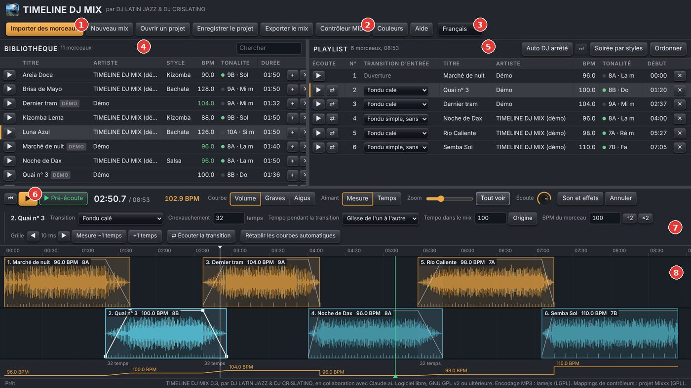
La fenêtre de TIMELINE DJ MIX
1Importer, nouveau mix, ouvrir et enregistrer un projet, exporter
2Contrôleur MIDI, couleurs et aide
3Choix de la langue
4Bibliothèque : vos morceaux analysés
5Playlist : l'ordre du mix et les transitions
6Lecture, pré-écoute, temps et tempo du mix
7Réglages du morceau sélectionné
8La timeline
3. Importer et analyser les morceaux
Cliquez sur Importer des morceaux ou déposez des fichiers sur la bibliothèque : MP3, WAV, FLAC, OGG, Opus, M4A/AAC et AIFF. Le logiciel calcule le BPM, la grille des temps et la tonalité, affichée avec son code de roue harmonique (8A, 9B…).
Une pastille verte signale une tonalité compatible avec le morceau sélectionné dans la playlist ; un BPM en vert, un tempo à moins de 6 %. Cliquez sur un titre de colonne pour trier, utilisez la recherche pour filtrer.
Les fichiers restent sur votre ordinateur ; le logiciel en garde une copie pour les retrouver à la prochaine ouverture.
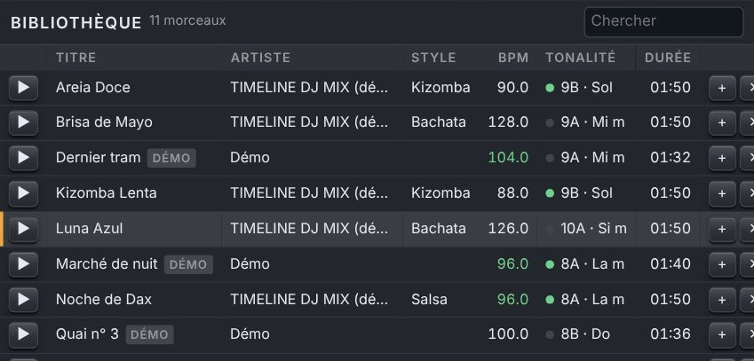
La bibliothèque
4. Construire le mix
Double-cliquez sur un morceau, cliquez sur + ou glissez-le dans la playlist. Glissez les lignes pour changer l'ordre ; Ordonner classe les morceaux par tempo et tonalité compatibles.
Chaque morceau a sa transition d'entrée : fondu calé (les deux morceaux au même tempo), échange des basses (les graves passent d'un morceau à l'autre au milieu), entrée franche, fondu simple, sans calage (choisi tout seul quand les tempos sont trop éloignés) ou coupe.
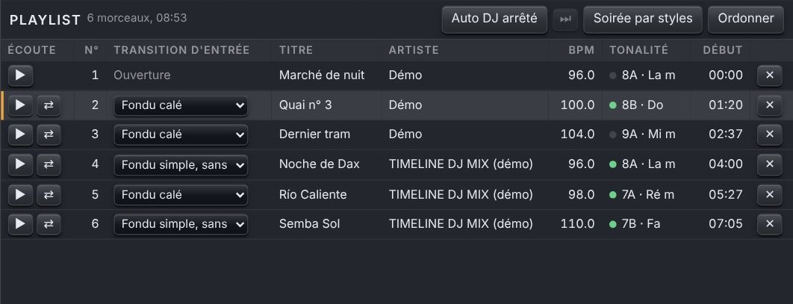
La playlist et les transitions
5. La timeline
Les morceaux alternent sur deux voies, A (orange) et B (bleu). Glissez un bloc pour allonger ou raccourcir le chevauchement ; tirez ses bords pour couper le début ou la fin. L'aimant cale les déplacements sur la mesure ou sur le temps.
Cliquez sur la règle pour placer la tête de lecture. Zoom et Tout voir règlent l'échelle ; Ctrl + molette zoome à l'endroit de la souris. La ligne orange du bas montre le tempo du mix, qui glisse d'un morceau à l'autre pendant les transitions.
La timeline : deux voies, chevauchements et courbe de tempo
6. Courbes de volume, graves et aigus
Choisissez la courbe (Volume, Graves ou Aigus), sélectionnez un bloc, puis cliquez sur la courbe pour poser un point et faites-le glisser. Un double-clic supprime un point. Rétablir les courbes automatiques efface les points posés à la main.
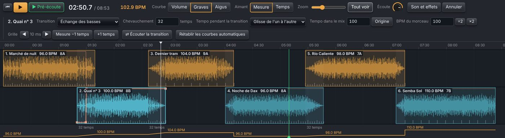
Courbe des graves pendant un échange des basses
7. Tempo et grille du morceau
Dans les réglages du morceau : le chevauchement en temps, le tempo pendant la transition (glisse de l'un à l'autre, garde celui du sortant, prend celui de l'entrant) et le tempo dans le mix.
Si un morceau est mal calé, corrigez son BPM (÷2, ×2 ou valeur exacte), décalez la grille de 10 ms, ou déplacez le premier temps de la mesure d'un temps. La hauteur suit le tempo, comme sur une platine vinyle.
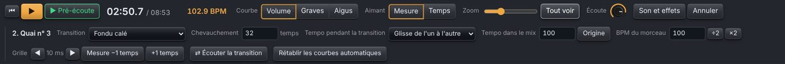
Les réglages du morceau sélectionné
8. Pré-écoute au casque
Le bouton ▶ de chaque ligne fait écouter le morceau au casque sans arrêter le mix, dans la bibliothèque comme dans la playlist ; un curseur permet d'aller où vous voulez dans le morceau. Le bouton ⇄ fait écouter la transition telle qu'elle sortira.
La ligne verte de la timeline montre où en est la pré-écoute du mix. Placez-la par un clic dans le bandeau du bas, Maj + clic ou clic droit, puis lancez Pré-écoute.
Sorties : par défaut, carte 4 canaux, sortie générale sur 1-2 et casque sur 3-4. Avec une carte stéréo, choisissez Stéréo ou envoyez le casque sur une autre carte son.
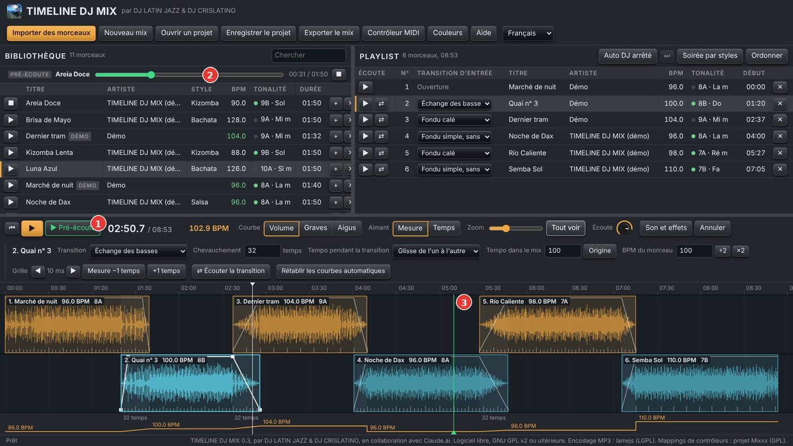
Pré-écoute d'un morceau de la bibliothèque et ligne verte
1Bouton Pré-écoute du mix
2Morceau écouté au casque et sa position
3Ligne verte de la pré-écoute
9. Son et effets
Pour chaque voie : volume, graves, médiums, aigus, filtre et tempo ±8 %. Au centre, le crossfader ; à droite, l'écho (calé sur le tempo), le flanger et la réverb. Un double-clic remet un réglage à zéro.
Vue simple remplace les potentiomètres par des curseurs ; un rond vert s'allume quand le réglage est au centre. Cochez Appliquer ces réglages à l'export pour les garder dans le fichier exporté.
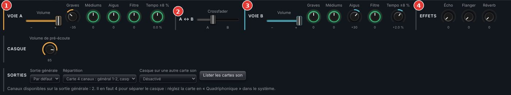
La table de mixage en vue contrôleur DJ
1Voie A
2Crossfader
3Voie B
4Effets
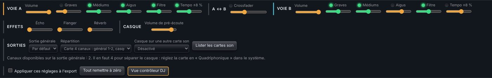
La vue simple, avec le rond vert au centre
10. Auto DJ et soirée par styles
Soirée par styles : ajoutez un style par ligne, choisissez son dossier et le nombre de titres par série. L'Auto DJ joue par exemple 3 salsas, 3 bachatas, 3 kizombas, puis recommence. Construire le mix ajoute la durée voulue d'un coup.
Auto DJ en marche ajoute le titre suivant pendant la lecture, avant la fin du mix ; le bouton ⏭ passe au style suivant. Sans dossiers, l'Auto DJ choisit le titre le plus proche en tempo et en tonalité.
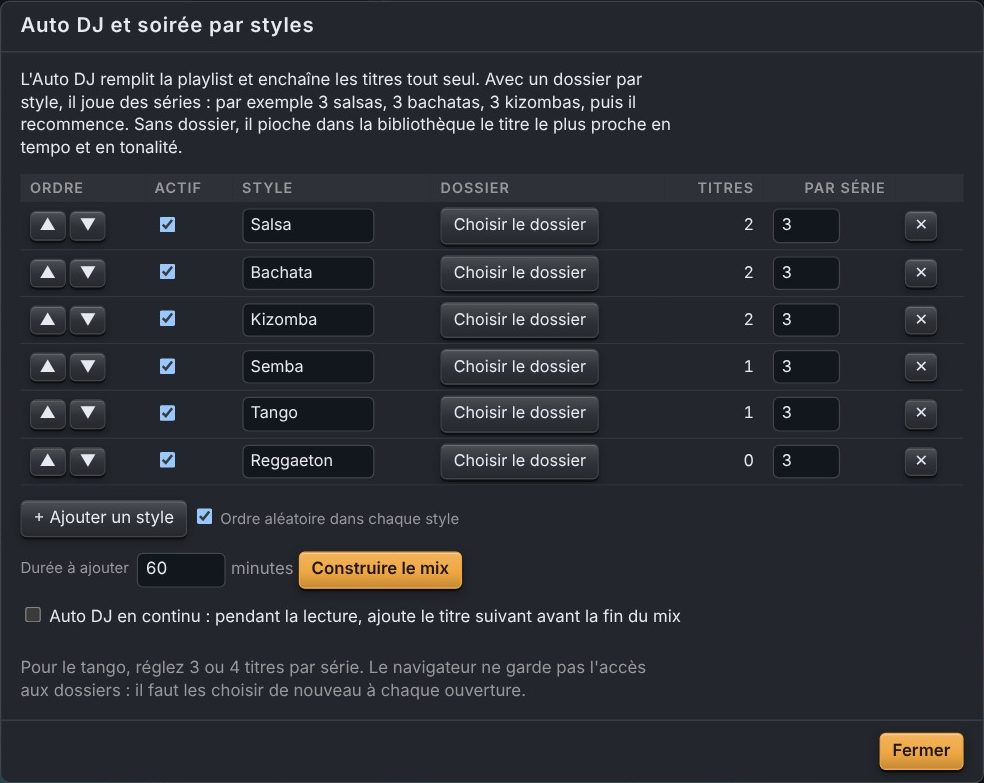
Auto DJ et soirée par styles
11. Contrôleurs MIDI
Choisissez votre appareil et cliquez sur Charger : les mappings du projet Mixxx sont lus tels quels (Pioneer DDJ, Numark, Hercules, Reloop, Allen & Heath, Traktor Kontrol Z1…). Platines 1 et 3 pilotent la voie A, platines 2 et 4 la voie B, y compris le fader de tempo. Importer un mapping Mixxx accepte tout autre fichier .xml avec ses .js.
Pour ajouter une commande : cliquez sur Apprendre sur une ligne, puis bougez le bouton, le potentiomètre ou le fader. Une commande apprise passe avant le mapping. Le MIDI fonctionne dans les versions installées et dans Chrome ou Edge.
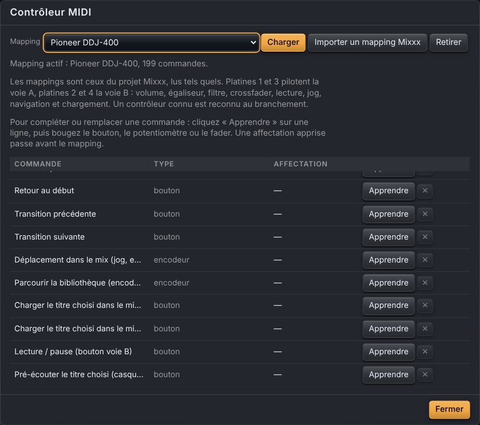
Mappings et apprentissage MIDI
12. Exporter le mix
Exporter le mix calcule toute la soirée en un fichier : MP3 128, 192 ou 320 kbit/s, FLAC 16 ou 24 bits, WAV 16 ou 24 bits, AIFF. Liste des titres enregistre la liste minutée, prête à publier avec le mix.
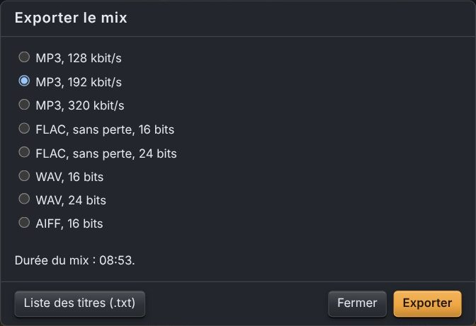
Les formats d'export
13. Projets
Enregistrer le projet garde l'ordre, les transitions, les courbes et les corrections de tempo dans un fichier .json. Ouvrir un projet le recharge. Le logiciel garde aussi le dernier mix tout seul.
Annuler (Ctrl + Z) revient en arrière. Modifier un morceau en attente ne coupe jamais celui qui joue.
14. Couleurs et langues
Couleurs : couleur du fond (le texte et les panneaux s'adaptent, même sur fond clair), couleur des boutons et couleur des boutons principaux.
La langue se choisit en haut à droite : français, anglais, espagnol, portugais, italien, allemand, grec, russe, chinois ou japonais. Le changement est immédiat et gardé pour la prochaine fois. Les titres de vos morceaux ne sont jamais traduits.
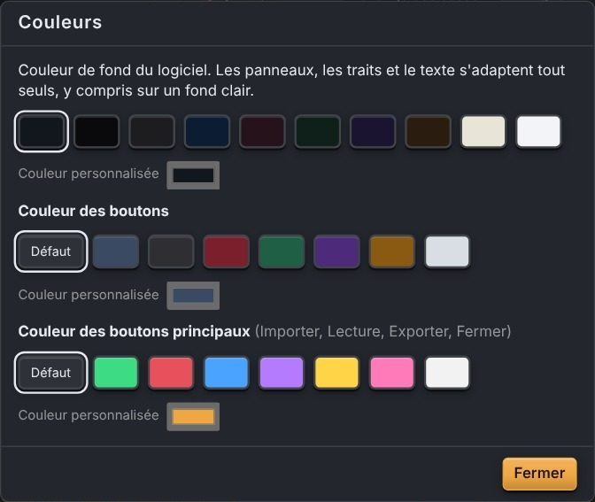
Les couleurs du logiciel
15. Raccourcis clavier
Espace : lecture / pause · Suppr : retirer le morceau sélectionné du mix · Ctrl + Z : annuler · Début : revenir au début · ← → : reculer ou avancer de 5 secondes · Ctrl + molette : zoom de la timeline.
F1 : ouvrir cette notice dans la langue du logiciel. Elle s'ouvre aussi depuis Aide › Notice d'utilisation complète.
16. Soutenir le projet
TIMELINE DJ MIX est un logiciel libre et gratuit (GNU GPL v2 ou ultérieure), créé par DJ LATIN JAZZ & DJ CRISLATINO en collaboration avec Claude.ai. Un don sur ko-fi.com/djlatinjazz aide à le faire évoluer. Les mappings de contrôleurs viennent du projet Mixxx (GPL) ; l'encodage MP3 utilise lamejs (LGPL).
User guide
The DJ mix built on a timeline — free software · Version 0.3.0
TIMELINE DJ MIX builds a complete mix on a timeline: each track is matched to the tempo of the previous one, transitions are shaped with the mouse, then the whole night is exported as a single audio file. The red numbers on the screenshots refer to the lists below them.
1. Installation
Windows: run Timeline-DJ-Mix-Windows-Setup.exe. If Windows shows "Windows protected your PC", click More info, then Run anyway.
macOS: choose the Apple Silicon (M1, M2…) or Intel version, unzip it and drag TIMELINE DJ MIX into Applications. On first launch, open System Settings › Privacy & Security and click Open Anyway.
Linux: install timeline-dj-mix_amd64.deb (Debian, Ubuntu, Mint) with a double-click, or make the AppImage executable and run it.
Without installing: the file Timeline-DJ-Mix.html opens in Chrome or Edge. It does everything, except keep access to folders from one session to the next.
2. The screen
At the top, the library (left) and the playlist (right). In the middle, the playback bar, then the settings of the selected track. At the bottom, the timeline. The Sound and effects button shows or hides the mixer. The borders between areas can be moved with the mouse.
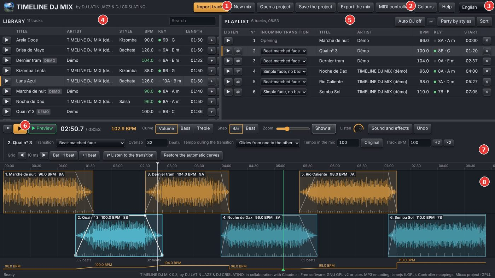
The TIMELINE DJ MIX window
1Import, new mix, open and save a project, export
2MIDI controller, colours and help
3Language choice
4Library: your analysed tracks
5Playlist: mix order and transitions
6Playback, preview, time and tempo of the mix
7Settings of the selected track
8The timeline
3. Importing and analysing tracks
Click Import tracks or drop files onto the library: MP3, WAV, FLAC, OGG, Opus, M4A/AAC and AIFF. The software calculates the BPM, the beat grid and the key, shown with its harmonic wheel code (8A, 9B…).
A green dot marks a key compatible with the track selected in the playlist; a green BPM, a tempo within 6 %. Click a column header to sort, use the search box to filter.
Files stay on your computer; the software keeps a copy so it can find them next time.
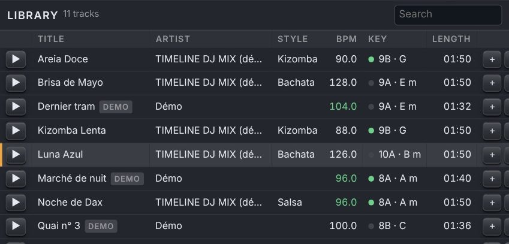
The library
4. Building the mix
Double-click a track, click + or drag it into the playlist. Drag rows to change the order; Sort arranges the tracks by compatible tempo and key.
Each track has its incoming transition: beat-matched fade (both tracks at the same tempo), bass swap (the bass passes from one track to the other in the middle), hard entry, simple fade, no beat-matching (chosen automatically when the tempos are too far apart) or cut.
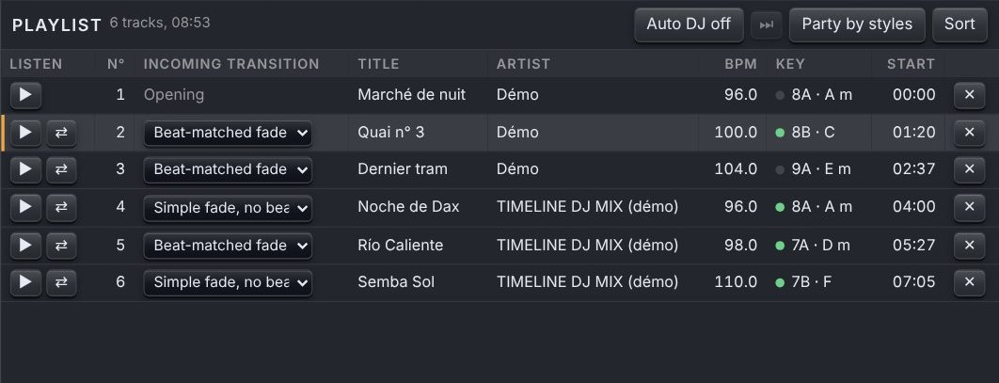
The playlist and transitions
5. The timeline
Tracks alternate on two channels, A (orange) and B (blue). Drag a block to lengthen or shorten the overlap; pull its edges to cut the start or the end. Snap aligns moves to the bar or to the beat.
Click the ruler to place the playhead. Zoom and Show all set the scale; Ctrl + wheel zooms where the mouse is. The orange line at the bottom shows the tempo of the mix, which glides from one track to the next during transitions.
The timeline: two channels, overlaps and tempo curve
6. Volume, bass and treble curves
Choose the curve (Volume, Bass or Treble), select a block, then click the curve to add a point and drag it. Double-click a point to delete it. Restore the automatic curves clears the points placed by hand.
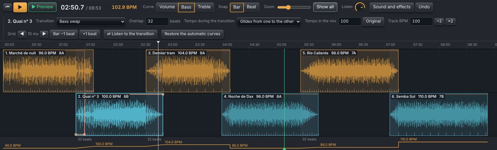
Bass curve during a bass swap
7. Track tempo and grid
In the track settings: the overlap in beats, the tempo during the transition (glides from one to the other, keeps the outgoing one, takes the incoming one) and the tempo in the mix.
If a track is badly aligned, correct its BPM (÷2, ×2 or exact value), shift the grid by 10 ms, or move the first beat of the bar by one beat. Pitch follows tempo, as on a vinyl turntable.
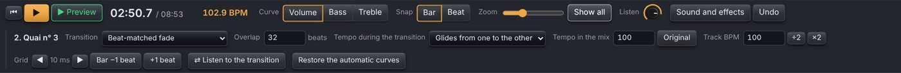
Settings of the selected track
8. Headphone preview
The ▶ button on each row plays the track in the headphones without stopping the mix, in the library as in the playlist; a slider lets you go anywhere in the track. The ⇄ button plays the transition as it will sound.
The green line on the timeline shows where the mix preview is. Place it by clicking in the bottom strip, Shift + click or right-click, then start Preview.
Outputs: by default, 4-channel card, master on 1-2 and headphones on 3-4. With a stereo card, choose Stereo or send the headphones to another sound card.
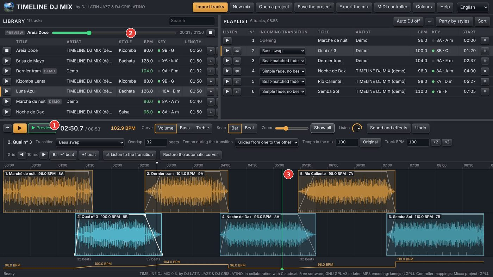
Previewing a library track, and the green line
1Mix preview button
2Track in the headphones and its position
3Green preview line
9. Sound and effects
For each channel: volume, bass, mids, treble, filter and tempo ±8 %. In the centre, the crossfader; on the right, echo (synced to the tempo), flanger and reverb. Double-click a control to reset it.
Simple view replaces the knobs with sliders; a green dot lights up when the control is centred. Tick Apply these settings to the export to keep them in the exported file.
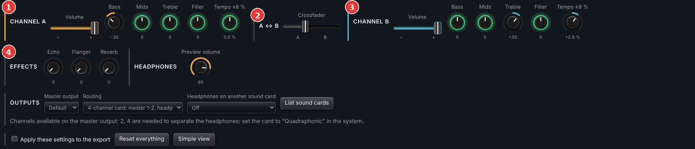
The mixer in DJ controller view
1Channel A
2Crossfader
3Channel B
4Effects
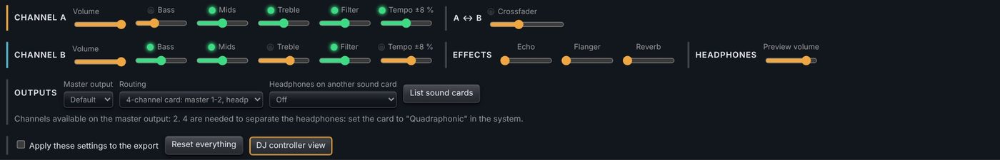
The simple view, with the green centre dot
10. Auto DJ and party by styles
Party by styles: add one style per row, choose its folder and the number of tracks per set. The Auto DJ plays, for example, 3 salsas, 3 bachatas, 3 kizombas, then starts again. Build the mix adds the chosen length in one go.
Auto DJ on adds the next track during playback, before the mix ends; the ⏭ button moves to the next style. Without folders, the Auto DJ picks the track closest in tempo and key.
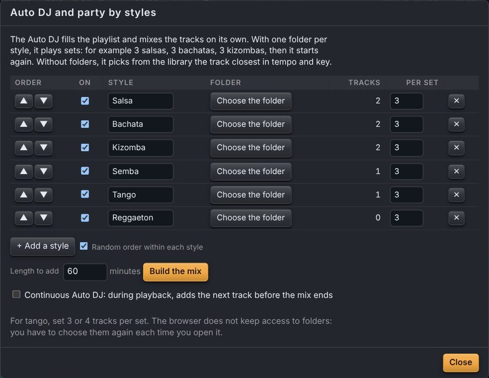
Auto DJ and party by styles
11. MIDI controllers
Choose your device and click Load: mappings from the Mixxx project are read as they are (Pioneer DDJ, Numark, Hercules, Reloop, Allen & Heath, Traktor Kontrol Z1…). Decks 1 and 3 control channel A, decks 2 and 4 channel B, including the tempo fader. Import a Mixxx mapping accepts any other .xml file with its .js files.
To add a command: click Learn on a row, then move the button, knob or fader. A learned command takes priority over the mapping. MIDI works in the installed versions and in Chrome or Edge.
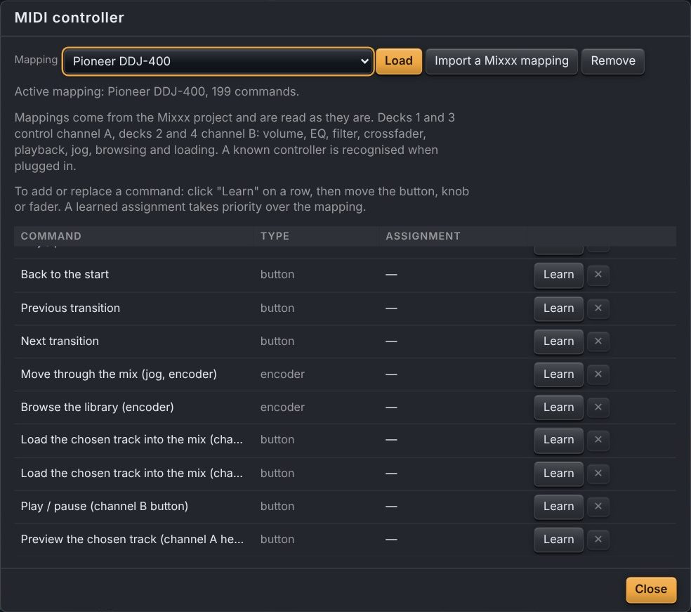
Mappings and MIDI learn
12. Exporting the mix
Export the mix renders the whole night into one file: MP3 128, 192 or 320 kbit/s, FLAC 16 or 24-bit, WAV 16 or 24-bit, AIFF. Track list saves the timed list, ready to publish with the mix.
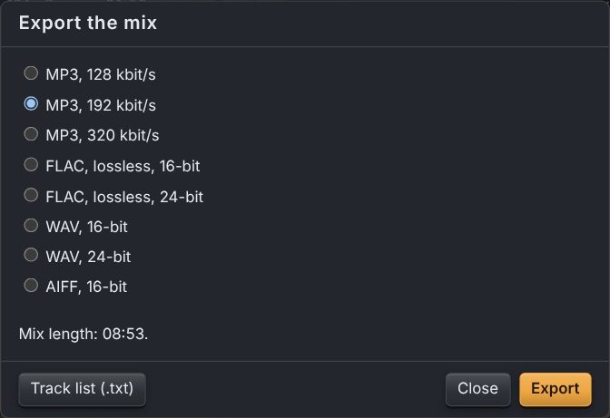
Export formats
13. Projects
Save the project keeps the order, transitions, curves and tempo corrections in a .json file. Open a project loads it again. The software also keeps the last mix automatically.
Undo (Ctrl + Z) goes back. Editing a waiting track never cuts the one that is playing.
14. Colours and languages
Colours: background colour (text and panels adapt, even on a light background), button colour and main button colour.
The language is chosen at the top right: French, English, Spanish, Portuguese, Italian, German, Greek, Russian, Chinese or Japanese. The change is immediate and kept for next time. Your track titles are never translated.
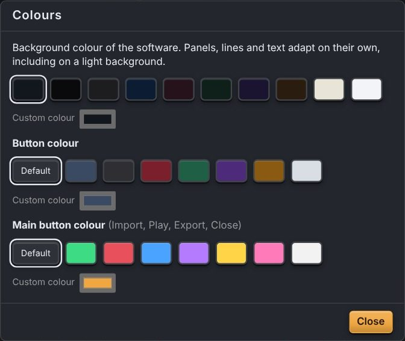
The software's colours
15. Keyboard shortcuts
Space: play / pause · Del: remove the selected track from the mix · Ctrl + Z: undo · Home: back to the start · ← →: back or forward 5 seconds · Ctrl + wheel: timeline zoom.
F1: open this guide in the software's language. It also opens from Help › Full user guide.
16. Supporting the project
TIMELINE DJ MIX is free software (GNU GPL v2 or later), created by DJ LATIN JAZZ & DJ CRISLATINO in collaboration with Claude.ai. A donation on ko-fi.com/djlatinjazz helps it grow. Controller mappings come from the Mixxx project (GPL); MP3 encoding uses lamejs (LGPL).
Manual de uso
La mezcla DJ montada en una línea de tiempo — software libre · Versión 0.3.0
TIMELINE DJ MIX construye una mezcla completa en una línea de tiempo: cada canción se ajusta al tempo de la anterior, las transiciones se ajustan con el ratón y luego toda la noche se exporta en un solo archivo de audio. Los números rojos de las capturas remiten a las listas que hay debajo.
1. Instalación
Windows: ejecuta Timeline-DJ-Mix-Windows-Setup.exe. Si Windows muestra «Windows protegió su PC», haz clic en Más información y luego en Ejecutar de todas formas.
macOS: elige la versión Apple Silicon (M1, M2…) o Intel, descomprime el .zip y arrastra TIMELINE DJ MIX a Aplicaciones. En el primer arranque, abre Ajustes del Sistema › Privacidad y seguridad y haz clic en Abrir igualmente.
Linux: instala timeline-dj-mix_amd64.deb (Debian, Ubuntu, Mint) con un doble clic, o haz ejecutable la AppImage y ábrela.
Sin instalación: el archivo Timeline-DJ-Mix.html se abre en Chrome o Edge. Lo hace todo, salvo conservar el acceso a las carpetas de una sesión a otra.
2. La pantalla
Arriba, la biblioteca (a la izquierda) y la playlist (a la derecha). En el centro, la barra de reproducción y luego los ajustes de la canción seleccionada. Abajo, la línea de tiempo. El botón Sonido y efectos muestra u oculta la mesa de mezclas. Las separaciones entre zonas se mueven con el ratón.
La ventana de TIMELINE DJ MIX
1Importar, nueva mezcla, abrir y guardar un proyecto, exportar
2Controlador MIDI, colores y ayuda
3Elección del idioma
4Biblioteca: tus canciones analizadas
5Playlist: el orden de la mezcla y las transiciones
6Reproducción, preescucha, tiempo y tempo de la mezcla
7Ajustes de la canción seleccionada
8La línea de tiempo
3. Importar y analizar las canciones
Haz clic en Importar canciones o suelta archivos sobre la biblioteca: MP3, WAV, FLAC, OGG, Opus, M4A/AAC y AIFF. El programa calcula el BPM, la rejilla de tiempos y la tonalidad, mostrada con su código de rueda armónica (8A, 9B…).
Un punto verde indica una tonalidad compatible con la canción seleccionada en la playlist; un BPM en verde, un tempo a menos del 6 %. Haz clic en el título de una columna para ordenar y usa la búsqueda para filtrar.
Los archivos se quedan en tu ordenador; el programa guarda una copia para encontrarlos la próxima vez.
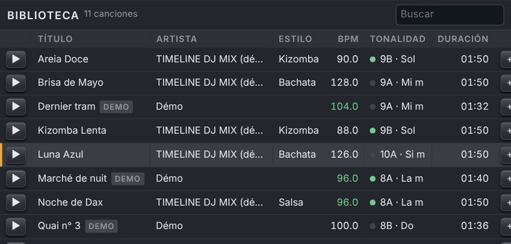
La biblioteca
4. Construir la mezcla
Haz doble clic en una canción, haz clic en + o arrástrala a la playlist. Arrastra las líneas para cambiar el orden; Ordenar clasifica las canciones por tempo y tonalidad compatibles.
Cada canción tiene su transición de entrada: fundido sincronizado (las dos canciones al mismo tempo), intercambio de graves (los graves pasan de una canción a la otra a mitad), entrada directa, fundido simple, sin sincronizar (elegido solo cuando los tempos están demasiado lejos) o corte.
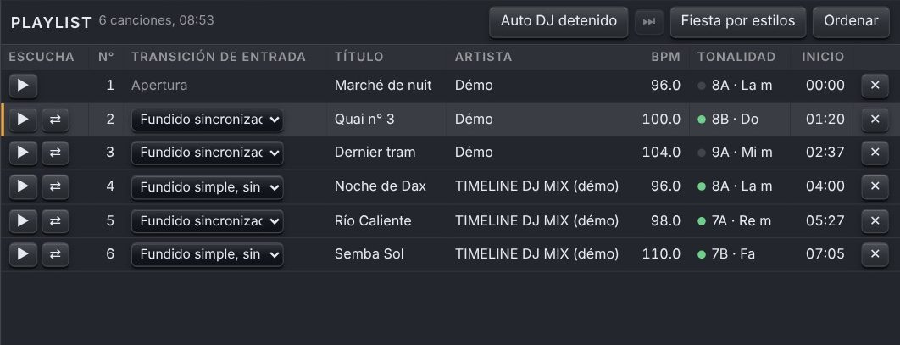
La playlist y las transiciones
5. La línea de tiempo
Las canciones alternan en dos vías, A (naranja) y B (azul). Arrastra un bloque para alargar o acortar el solapamiento; tira de sus bordes para cortar el principio o el final. El imán ajusta los movimientos al compás o al tiempo.
Haz clic en la regla para colocar el cabezal. Zoom y Ver todo ajustan la escala; Ctrl + rueda hace zoom donde está el ratón. La línea naranja de abajo muestra el tempo de la mezcla, que pasa de una canción a otra durante las transiciones.
La línea de tiempo: dos vías, solapamientos y curva de tempo
6. Curvas de volumen, graves y agudos
Elige la curva (Volumen, Graves o Agudos), selecciona un bloque y haz clic en la curva para poner un punto y arrastrarlo. Un doble clic borra un punto. Restablecer las curvas automáticas borra los puntos puestos a mano.
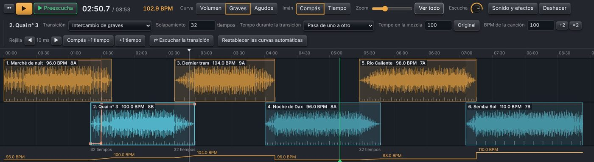
Curva de graves durante un intercambio de graves
7. Tempo y rejilla de la canción
En los ajustes de la canción: el solapamiento en tiempos, el tempo durante la transición (pasa de uno a otro, mantiene el de la saliente, toma el de la entrante) y el tempo en la mezcla.
Si una canción está mal ajustada, corrige su BPM (÷2, ×2 o valor exacto), desplaza la rejilla 10 ms o mueve el primer tiempo del compás un tiempo. El tono sigue al tempo, como en un tocadiscos de vinilo.
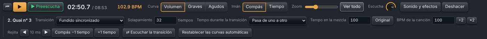
Los ajustes de la canción seleccionada
8. Preescucha en auriculares
El botón ▶ de cada línea reproduce la canción en los auriculares sin detener la mezcla, tanto en la biblioteca como en la playlist; un cursor permite ir a cualquier punto de la canción. El botón ⇄ reproduce la transición tal como sonará.
La línea verde de la línea de tiempo muestra dónde va la preescucha de la mezcla. Colócala con un clic en la franja inferior, Mayús + clic o clic derecho, y luego pulsa Preescucha.
Salidas: por defecto, tarjeta de 4 canales, salida general en 1-2 y auriculares en 3-4. Con una tarjeta estéreo, elige Estéreo o envía los auriculares a otra tarjeta de sonido.
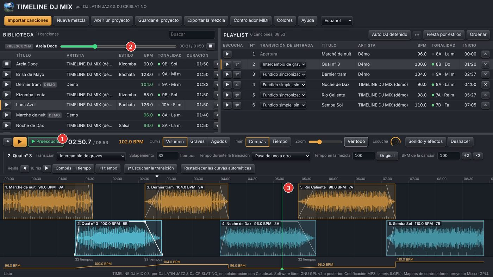
Preescucha de una canción de la biblioteca y línea verde
1Botón de preescucha de la mezcla
2Canción en los auriculares y su posición
3Línea verde de la preescucha
9. Sonido y efectos
Para cada vía: volumen, graves, medios, agudos, filtro y tempo ±8 %. En el centro, el crossfader; a la derecha, el eco (sincronizado con el tempo), el flanger y la reverb. Un doble clic pone un ajuste a cero.
La vista simple sustituye los potenciómetros por cursores; un círculo verde se enciende cuando el ajuste está en el centro. Marca Aplicar estos ajustes a la exportación para conservarlos en el archivo exportado.
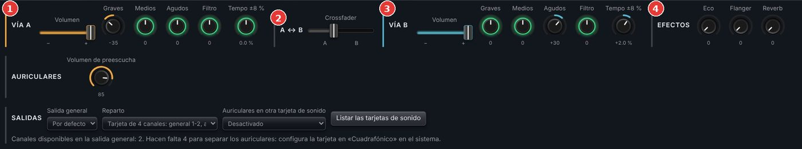
La mesa de mezclas en vista de controlador DJ
1Vía A
2Crossfader
3Vía B
4Efectos
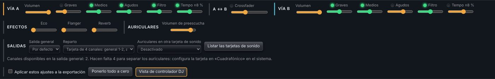
La vista simple, con el círculo verde en el centro
10. Auto DJ y fiesta por estilos
Fiesta por estilos: añade un estilo por línea, elige su carpeta y el número de canciones por serie. El Auto DJ toca por ejemplo 3 salsas, 3 bachatas, 3 kizombas y vuelve a empezar. Construir la mezcla añade de una vez la duración deseada.
Auto DJ en marcha añade la siguiente canción durante la reproducción, antes del final de la mezcla; el botón ⏭ pasa al estilo siguiente. Sin carpetas, el Auto DJ elige la canción más cercana en tempo y tonalidad.
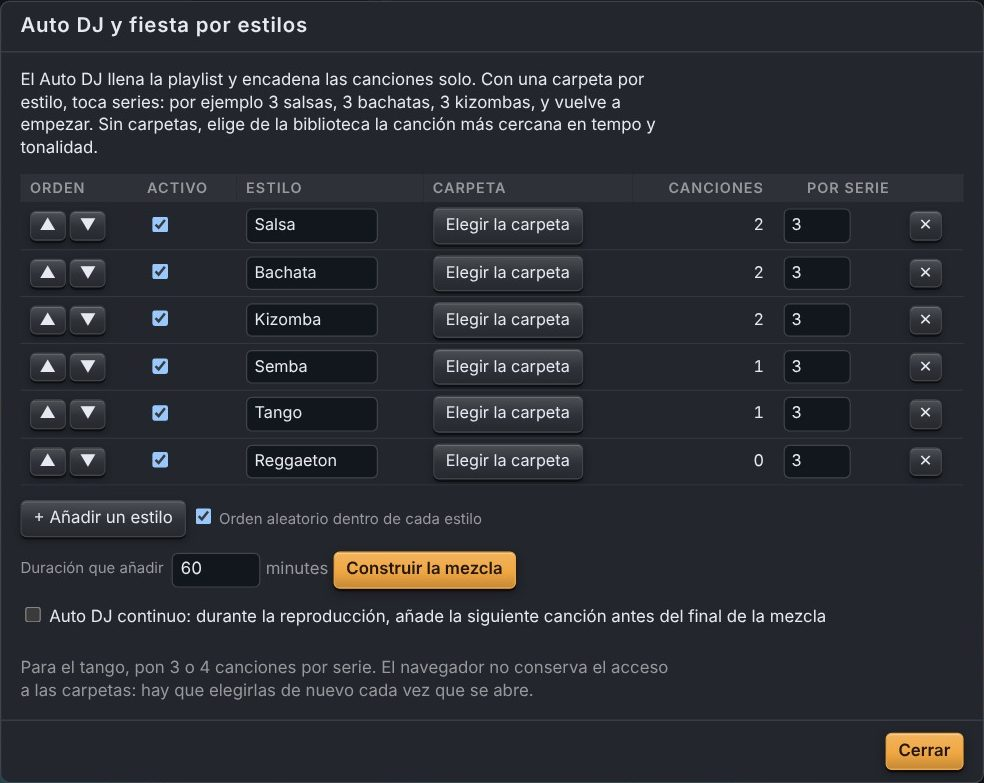
Auto DJ y fiesta por estilos
11. Controladores MIDI
Elige tu aparato y haz clic en Cargar: los mapeos del proyecto Mixxx se leen tal cual (Pioneer DDJ, Numark, Hercules, Reloop, Allen & Heath, Traktor Kontrol Z1…). Los platos 1 y 3 controlan la vía A, los platos 2 y 4 la vía B, incluido el fader de tempo. Importar un mapeo de Mixxx acepta cualquier otro archivo .xml con sus .js.
Para añadir un mando: haz clic en Aprender en una línea y mueve el botón, el potenciómetro o el fader. Un mando aprendido tiene prioridad sobre el mapeo. El MIDI funciona en las versiones instaladas y en Chrome o Edge.
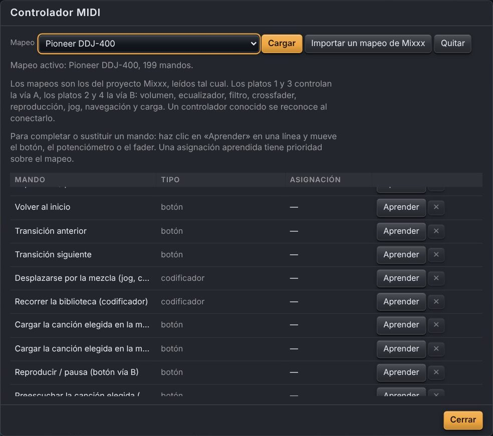
Mapeos y aprendizaje MIDI
12. Exportar la mezcla
Exportar la mezcla calcula toda la noche en un archivo: MP3 a 128, 192 o 320 kbit/s, FLAC de 16 o 24 bits, WAV de 16 o 24 bits, AIFF. Lista de canciones guarda la lista con tiempos, lista para publicar con la mezcla.
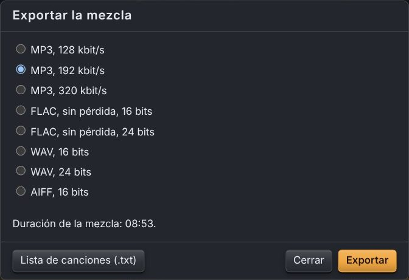
Los formatos de exportación
13. Proyectos
Guardar el proyecto conserva el orden, las transiciones, las curvas y las correcciones de tempo en un archivo .json. Abrir un proyecto lo vuelve a cargar. El programa también guarda solo la última mezcla.
Deshacer (Ctrl + Z) vuelve atrás. Modificar una canción en espera nunca corta la que suena.
14. Colores e idiomas
Colores: color de fondo (el texto y los paneles se adaptan, incluso sobre fondo claro), color de los botones y color de los botones principales.
El idioma se elige arriba a la derecha: francés, inglés, español, portugués, italiano, alemán, griego, ruso, chino o japonés. El cambio es inmediato y se conserva para la próxima vez. Los títulos de tus canciones nunca se traducen.
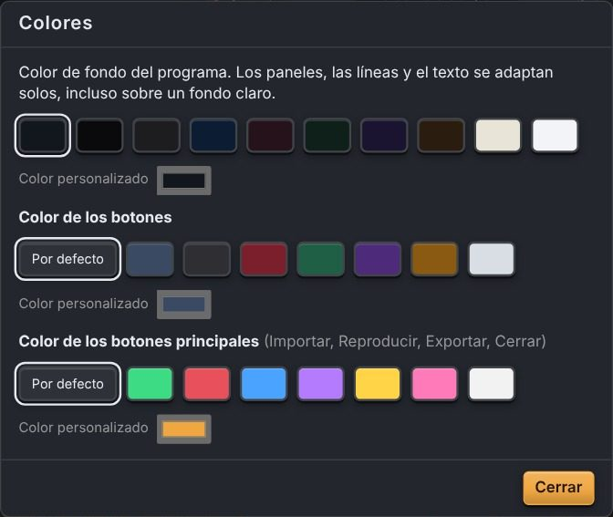
Los colores del programa
15. Atajos de teclado
Espacio: reproducir / pausa · Supr: quitar de la mezcla la canción seleccionada · Ctrl + Z: deshacer · Inicio: volver al principio · ← →: retroceder o avanzar 5 segundos · Ctrl + rueda: zoom de la línea de tiempo.
F1: abrir este manual en el idioma del programa. También se abre desde Ayuda › Manual de uso completo.
16. Apoyar el proyecto
TIMELINE DJ MIX es software libre y gratuito (GNU GPL v2 o posterior), creado por DJ LATIN JAZZ & DJ CRISLATINO en colaboración con Claude.ai. Un donativo en ko-fi.com/djlatinjazz ayuda a hacerlo evolucionar. Los mapeos de controladores vienen del proyecto Mixxx (GPL); la codificación MP3 usa lamejs (LGPL).
Manual de utilização
A mixagem DJ montada numa linha temporal — software livre · Versão 0.3.0
O TIMELINE DJ MIX constrói uma mixagem completa numa linha temporal: cada faixa é acertada no andamento da anterior, as transições regulam-se com o rato e depois a noite inteira é exportada num único ficheiro de áudio. Os números vermelhos das capturas remetem para as listas que estão por baixo.
1. Instalação
Windows: execute Timeline-DJ-Mix-Windows-Setup.exe. Se o Windows mostrar «O Windows protegeu o seu PC», clique em Mais informações e depois em Executar mesmo assim.
macOS: escolha a versão Apple Silicon (M1, M2…) ou Intel, descomprima o .zip e arraste o TIMELINE DJ MIX para Aplicações. No primeiro arranque, abra Definições do Sistema › Privacidade e segurança e clique em Abrir na mesma.
Linux: instale timeline-dj-mix_amd64.deb (Debian, Ubuntu, Mint) com um duplo clique, ou torne a AppImage executável e abra-a.
Sem instalação: o ficheiro Timeline-DJ-Mix.html abre no Chrome ou no Edge. Faz tudo, exceto guardar o acesso às pastas de uma sessão para a outra.
2. O ecrã
Em cima, a biblioteca (à esquerda) e a playlist (à direita). Ao meio, a barra de reprodução e depois as definições da faixa selecionada. Em baixo, a linha temporal. O botão Som e efeitos mostra ou esconde a mesa de mistura. As separações entre as zonas movem-se com o rato.
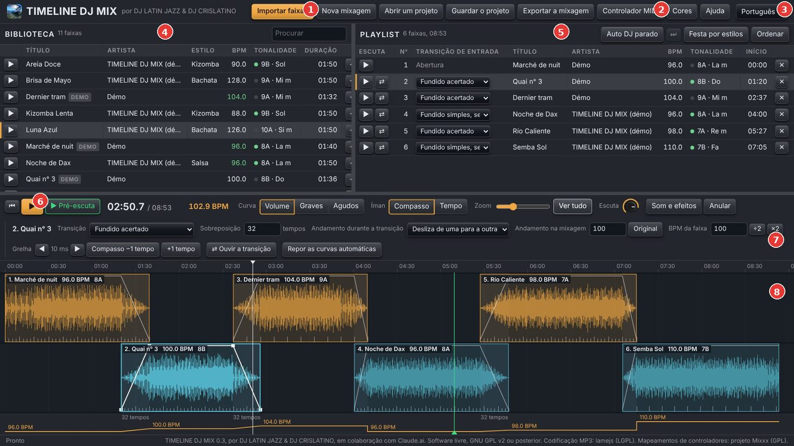
A janela do TIMELINE DJ MIX
1Importar, nova mixagem, abrir e guardar um projeto, exportar
2Controlador MIDI, cores e ajuda
3Escolha do idioma
4Biblioteca: as suas faixas analisadas
5Playlist: a ordem da mixagem e as transições
6Reprodução, pré-escuta, tempo e andamento da mixagem
7Definições da faixa selecionada
8A linha temporal
3. Importar e analisar as faixas
Clique em Importar faixas ou largue ficheiros na biblioteca: MP3, WAV, FLAC, OGG, Opus, M4A/AAC e AIFF. O programa calcula o BPM, a grelha de tempos e a tonalidade, apresentada com o código da roda harmónica (8A, 9B…).
Um ponto verde indica uma tonalidade compatível com a faixa selecionada na playlist; um BPM a verde, um andamento a menos de 6 %. Clique no título de uma coluna para ordenar e use a pesquisa para filtrar.
Os ficheiros ficam no seu computador; o programa guarda uma cópia para os encontrar na próxima abertura.
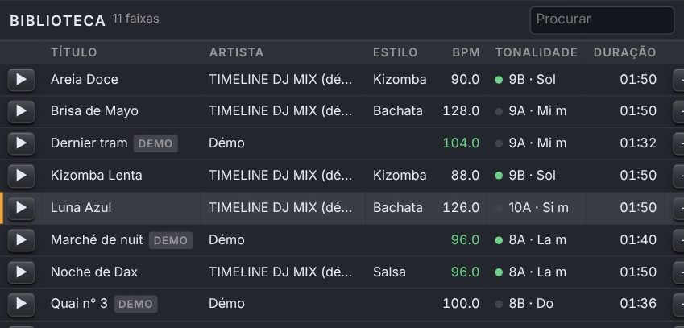
A biblioteca
4. Construir a mixagem
Clique duas vezes numa faixa, clique em + ou arraste-a para a playlist. Arraste as linhas para mudar a ordem; Ordenar organiza as faixas por andamento e tonalidade compatíveis.
Cada faixa tem a sua transição de entrada: fundido acertado (as duas faixas no mesmo andamento), troca de graves (os graves passam de uma faixa para a outra a meio), entrada direta, fundido simples, sem acerto (escolhido sozinho quando os andamentos estão demasiado afastados) ou corte.
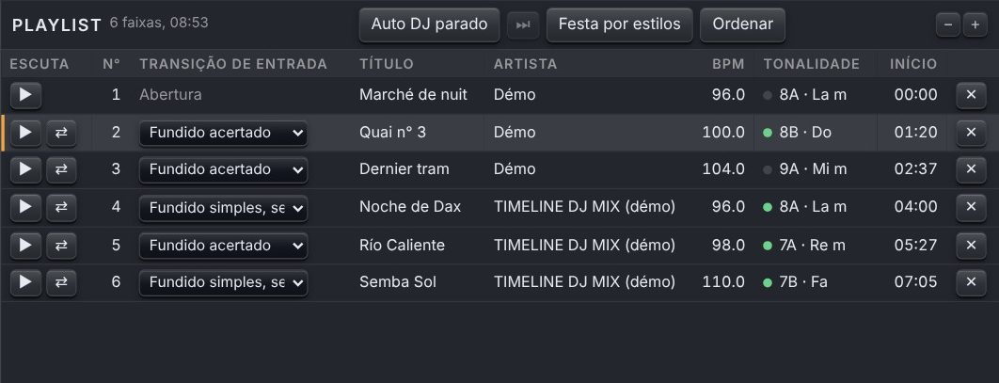
A playlist e as transições
5. A linha temporal
As faixas alternam em duas vias, A (laranja) e B (azul). Arraste um bloco para alongar ou encurtar a sobreposição; puxe as bordas para cortar o início ou o fim. O íman encaixa os movimentos no compasso ou no tempo.
Clique na régua para colocar a cabeça de leitura. Zoom e Ver tudo regulam a escala; Ctrl + roda faz zoom onde está o rato. A linha laranja em baixo mostra o andamento da mixagem, que desliza de uma faixa para a outra durante as transições.
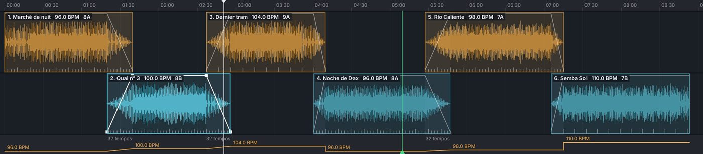
A linha temporal: duas vias, sobreposições e curva de andamento
6. Curvas de volume, graves e agudos
Escolha a curva (Volume, Graves ou Agudos), selecione um bloco e clique na curva para pôr um ponto e arrastá-lo. Um duplo clique apaga um ponto. Repor as curvas automáticas apaga os pontos postos à mão.
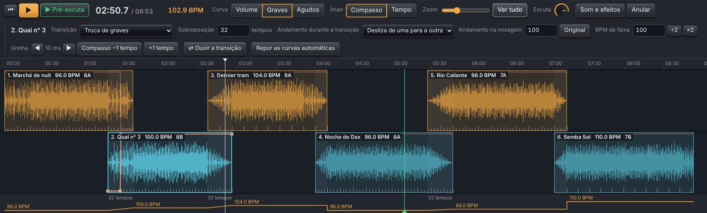
Curva de graves durante uma troca de graves
7. Andamento e grelha da faixa
Nas definições da faixa: a sobreposição em tempos, o andamento durante a transição (desliza de uma para a outra, mantém o da que sai, usa o da que entra) e o andamento na mixagem.
Se uma faixa estiver mal acertada, corrija o BPM (÷2, ×2 ou valor exato), desloque a grelha 10 ms ou mova o primeiro tempo do compasso um tempo. A altura segue o andamento, como num gira-discos de vinil.
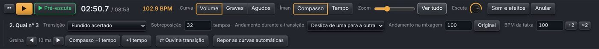
As definições da faixa selecionada
8. Pré-escuta nos auscultadores
O botão ▶ de cada linha toca a faixa nos auscultadores sem parar a mixagem, na biblioteca como na playlist; um cursor permite ir a qualquer ponto da faixa. O botão ⇄ toca a transição tal como vai soar.
A linha verde da linha temporal mostra onde vai a pré-escuta da mixagem. Coloque-a com um clique na faixa de baixo, Shift + clique ou clique direito, e depois carregue em Pré-escuta.
Saídas: por predefinição, placa de 4 canais, saída geral em 1-2 e auscultadores em 3-4. Com uma placa estéreo, escolha Estéreo ou envie os auscultadores para outra placa de som.
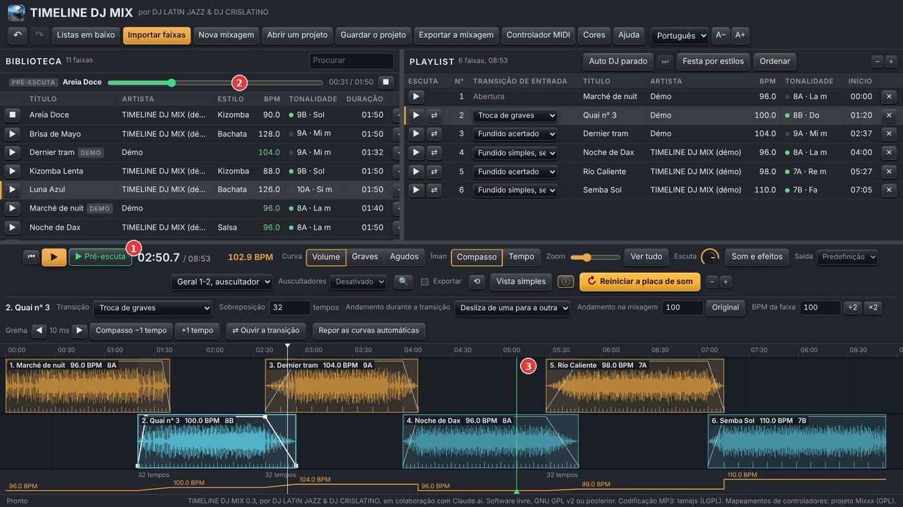
Pré-escuta de uma faixa da biblioteca e linha verde
1Botão de pré-escuta da mixagem
2Faixa nos auscultadores e a sua posição
3Linha verde da pré-escuta
9. Som e efeitos
Para cada via: volume, graves, médios, agudos, filtro e andamento ±8 %. Ao centro, o crossfader; à direita, o eco (acertado no andamento), o flanger e o reverb. Um duplo clique repõe um controlo a zero.
A vista simples substitui os potenciómetros por cursores; um círculo verde acende-se quando o controlo está ao centro. Marque Aplicar estas definições à exportação para as manter no ficheiro exportado.
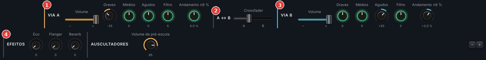
A mesa de mistura em vista de controlador DJ
1Via A
2Crossfader
3Via B
4Efeitos
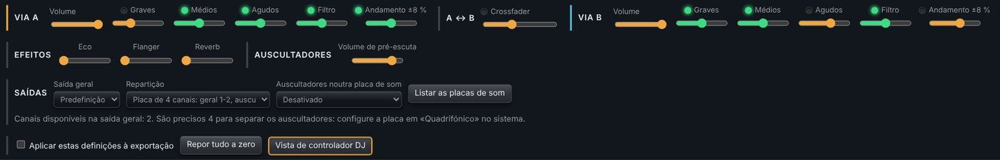
A vista simples, com o círculo verde ao centro
10. Auto DJ e festa por estilos
Festa por estilos: adicione um estilo por linha, escolha a pasta e o número de faixas por série. O Auto DJ toca por exemplo 3 salsas, 3 bachatas, 3 kizombas e recomeça. Construir a mixagem adiciona de uma vez a duração pretendida.
Auto DJ ligado adiciona a faixa seguinte durante a reprodução, antes do fim da mixagem; o botão ⏭ passa ao estilo seguinte. Sem pastas, o Auto DJ escolhe a faixa mais próxima em andamento e tonalidade.
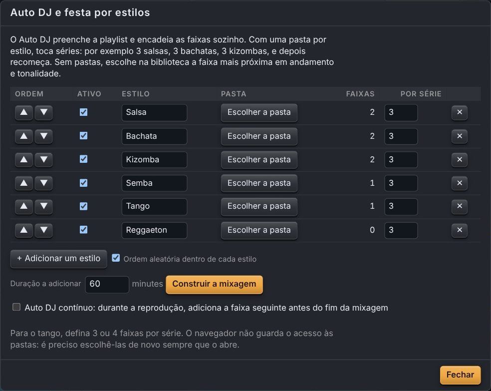
Auto DJ e festa por estilos
11. Controladores MIDI
Escolha o seu aparelho e clique em Carregar: os mapeamentos do projeto Mixxx são lidos tal como estão (Pioneer DDJ, Numark, Hercules, Reloop, Allen & Heath, Traktor Kontrol Z1…). Os pratos 1 e 3 controlam a via A, os pratos 2 e 4 a via B, incluindo o fader de andamento. Importar um mapeamento Mixxx aceita qualquer outro ficheiro .xml com os seus .js.
Para adicionar um comando: clique em Aprender numa linha e mexa o botão, o potenciómetro ou o fader. Um comando aprendido tem prioridade sobre o mapeamento. O MIDI funciona nas versões instaladas e no Chrome ou no Edge.
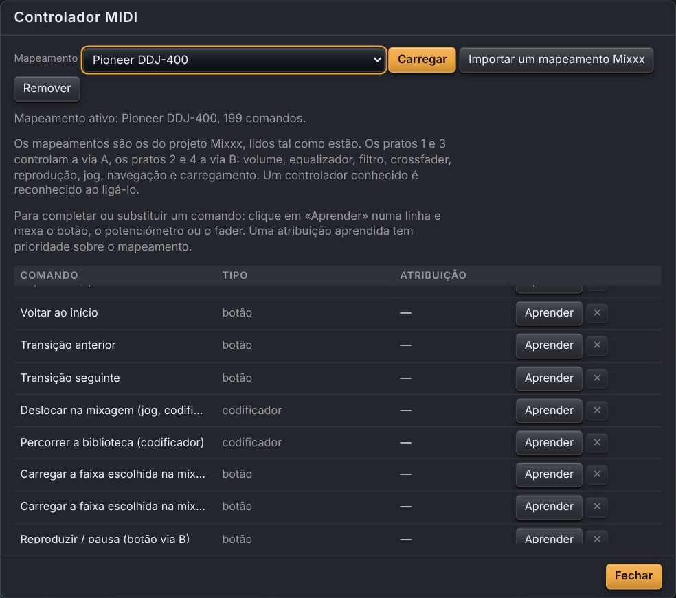
Mapeamentos e aprendizagem MIDI
12. Exportar a mixagem
Exportar a mixagem calcula a noite inteira num ficheiro: MP3 a 128, 192 ou 320 kbit/s, FLAC de 16 ou 24 bits, WAV de 16 ou 24 bits, AIFF. Lista de faixas guarda a lista cronometrada, pronta a publicar com a mixagem.
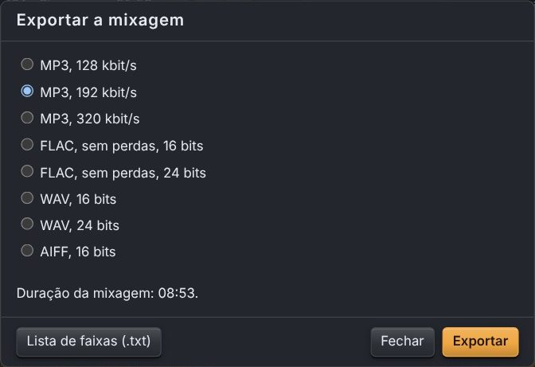
Os formatos de exportação
13. Projetos
Guardar o projeto mantém a ordem, as transições, as curvas e as correções de andamento num ficheiro .json. Abrir um projeto volta a carregá-lo. O programa também guarda sozinho a última mixagem.
Anular (Ctrl + Z) volta atrás. Alterar uma faixa em espera nunca corta a que está a tocar.
14. Cores e idiomas
Cores: cor do fundo (o texto e os painéis adaptam-se, mesmo num fundo claro), cor dos botões e cor dos botões principais.
O idioma escolhe-se em cima à direita: francês, inglês, espanhol, português, italiano, alemão, grego, russo, chinês ou japonês. A mudança é imediata e fica guardada para a próxima vez. Os títulos das suas faixas nunca são traduzidos.
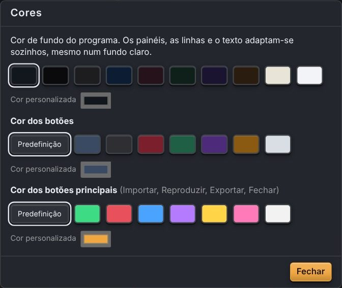
As cores do programa
15. Atalhos de teclado
Espaço: reproduzir / pausa · Del: remover da mixagem a faixa selecionada · Ctrl + Z: anular · Home: voltar ao início · ← →: recuar ou avançar 5 segundos · Ctrl + roda: zoom da linha temporal.
F1: abrir este manual no idioma do programa. Também abre a partir de Ajuda › Manual de utilização completo.
16. Apoiar o projeto
O TIMELINE DJ MIX é software livre e gratuito (GNU GPL v2 ou posterior), criado por DJ LATIN JAZZ & DJ CRISLATINO em colaboração com Claude.ai. Um donativo em ko-fi.com/djlatinjazz ajuda a fazê-lo evoluir. Os mapeamentos de controladores vêm do projeto Mixxx (GPL); a codificação MP3 usa lamejs (LGPL).
Manuale d'uso
Il mix DJ montato su una timeline — software libero · Versione 0.3.0
TIMELINE DJ MIX costruisce un mix completo su una linea del tempo: ogni brano viene portato al tempo del precedente, le transizioni si regolano con il mouse, poi l'intera serata si esporta in un solo file audio. I numeri rossi nelle immagini rimandano agli elenchi sottostanti.
1. Installazione
Windows: avvia Timeline-DJ-Mix-Windows-Setup.exe. Se Windows mostra «PC protetto da Windows», fai clic su Ulteriori informazioni e poi su Esegui comunque.
macOS: scegli la versione Apple Silicon (M1, M2…) o Intel, decomprimi il .zip e trascina TIMELINE DJ MIX in Applicazioni. Al primo avvio, apri Impostazioni di Sistema › Privacy e sicurezza e fai clic su Apri comunque.
Linux: installa timeline-dj-mix_amd64.deb (Debian, Ubuntu, Mint) con un doppio clic, oppure rendi eseguibile l'AppImage e avviala.
Senza installazione: il file Timeline-DJ-Mix.html si apre in Chrome o Edge. Fa tutto, tranne conservare l'accesso alle cartelle da una sessione all'altra.
2. La schermata
In alto, la libreria (a sinistra) e la playlist (a destra). Al centro, la barra di riproduzione e poi le impostazioni del brano selezionato. In basso, la timeline. Il pulsante Suono ed effetti mostra o nasconde il mixer. I bordi tra le zone si spostano con il mouse.
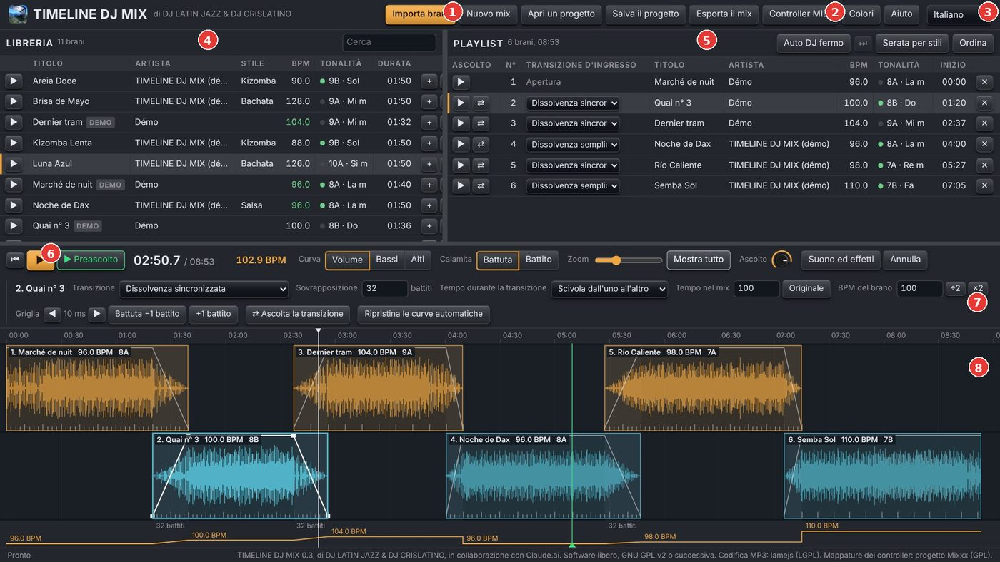
La finestra di TIMELINE DJ MIX
1Importa, nuovo mix, apri e salva un progetto, esporta
2Controller MIDI, colori e aiuto
3Scelta della lingua
4Libreria: i tuoi brani analizzati
5Playlist: l'ordine del mix e le transizioni
6Riproduzione, preascolto, tempo e velocità del mix
7Impostazioni del brano selezionato
8La timeline
3. Importare e analizzare i brani
Fai clic su Importa brani o trascina dei file sulla libreria: MP3, WAV, FLAC, OGG, Opus, M4A/AAC e AIFF. Il programma calcola il BPM, la griglia dei battiti e la tonalità, mostrata con il codice della ruota armonica (8A, 9B…).
Un pallino verde indica una tonalità compatibile con il brano selezionato nella playlist; un BPM in verde, un tempo entro il 6 %. Fai clic sul titolo di una colonna per ordinare e usa la ricerca per filtrare.
I file restano sul tuo computer; il programma ne conserva una copia per ritrovarli alla prossima apertura.
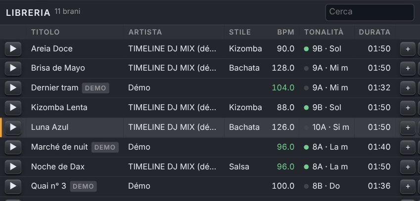
La libreria
4. Costruire il mix
Fai doppio clic su un brano, fai clic su + o trascinalo nella playlist. Trascina le righe per cambiare l'ordine; Ordina dispone i brani per tempo e tonalità compatibili.
Ogni brano ha la sua transizione d'ingresso: dissolvenza sincronizzata (i due brani allo stesso tempo), scambio dei bassi (i bassi passano da un brano all'altro a metà), entrata secca, dissolvenza semplice, senza sincronia (scelta da sola quando i tempi sono troppo distanti) o taglio.
La playlist e le transizioni
5. La timeline
I brani si alternano su due vie, A (arancione) e B (blu). Trascina un blocco per allungare o accorciare la sovrapposizione; tira i suoi bordi per tagliare l'inizio o la fine. La calamita aggancia gli spostamenti alla battuta o al battito.
Fai clic sul righello per posizionare la testina. Zoom e Mostra tutto regolano la scala; Ctrl + rotella ingrandisce dove si trova il mouse. La linea arancione in basso mostra il tempo del mix, che scivola da un brano all'altro durante le transizioni.
La timeline: due vie, sovrapposizioni e curva del tempo
6. Curve di volume, bassi e alti
Scegli la curva (Volume, Bassi o Alti), seleziona un blocco, poi fai clic sulla curva per aggiungere un punto e trascinalo. Un doppio clic elimina un punto. Ripristina le curve automatiche cancella i punti posati a mano.
Curva dei bassi durante uno scambio dei bassi
7. Tempo e griglia del brano
Nelle impostazioni del brano: la sovrapposizione in battiti, il tempo durante la transizione (scivola dall'uno all'altro, mantiene quello in uscita, prende quello in entrata) e il tempo nel mix.
Se un brano non è ben allineato, correggi il suo BPM (÷2, ×2 o valore esatto), sposta la griglia di 10 ms o sposta di un battito il primo battito della battuta. L'intonazione segue il tempo, come su un giradischi in vinile.
Le impostazioni del brano selezionato
8. Preascolto in cuffia
Il pulsante ▶ di ogni riga fa ascoltare il brano in cuffia senza fermare il mix, nella libreria come nella playlist; un cursore permette di andare in qualsiasi punto del brano. Il pulsante ⇄ fa ascoltare la transizione così come suonerà.
La linea verde della timeline mostra dove si trova il preascolto del mix. Posizionala con un clic nella fascia in basso, Maiusc + clic o clic destro, poi avvia Preascolto.
Uscite: per impostazione predefinita, scheda a 4 canali, uscita generale su 1-2 e cuffie su 3-4. Con una scheda stereo, scegli Stereo oppure invia le cuffie a un'altra scheda audio.
Preascolto di un brano della libreria e linea verde
1Pulsante di preascolto del mix
2Brano in cuffia e sua posizione
3Linea verde del preascolto
9. Suono ed effetti
Per ogni via: volume, bassi, medi, alti, filtro e tempo ±8 %. Al centro il crossfader; a destra l'eco (a tempo), il flanger e il riverbero. Un doppio clic azzera un controllo.
La vista semplice sostituisce le manopole con dei cursori; un cerchio verde si accende quando il controllo è al centro. Spunta Applica queste impostazioni all'esportazione per mantenerle nel file esportato.
Il mixer in vista controller DJ
1Via A
2Crossfader
3Via B
4Effetti
La vista semplice, con il cerchio verde al centro
10. Auto DJ e serata per stili
Serata per stili: aggiungi uno stile per riga, scegli la sua cartella e il numero di brani per serie. L'Auto DJ suona per esempio 3 salse, 3 bachate, 3 kizombe, poi ricomincia. Costruisci il mix aggiunge in una volta la durata desiderata.
Auto DJ in funzione aggiunge il brano successivo durante la riproduzione, prima della fine del mix; il pulsante ⏭ passa allo stile successivo. Senza cartelle, l'Auto DJ sceglie il brano più vicino per tempo e tonalità.
Auto DJ e serata per stili
11. Controller MIDI
Scegli il tuo apparecchio e fai clic su Carica: le mappature del progetto Mixxx vengono lette così come sono (Pioneer DDJ, Numark, Hercules, Reloop, Allen & Heath, Traktor Kontrol Z1…). I deck 1 e 3 comandano la via A, i deck 2 e 4 la via B, compreso il fader del tempo. Importa una mappatura Mixxx accetta qualsiasi altro file .xml con i suoi .js.
Per aggiungere un comando: fai clic su Impara su una riga, poi muovi il pulsante, la manopola o il fader. Un comando appreso ha la precedenza sulla mappatura. Il MIDI funziona nelle versioni installate e in Chrome o Edge.
Mappature e apprendimento MIDI
12. Esportare il mix
Esporta il mix calcola l'intera serata in un file: MP3 a 128, 192 o 320 kbit/s, FLAC a 16 o 24 bit, WAV a 16 o 24 bit, AIFF. Elenco dei brani salva l'elenco con i tempi, pronto da pubblicare con il mix.
I formati di esportazione
13. Progetti
Salva il progetto conserva ordine, transizioni, curve e correzioni di tempo in un file .json. Apri un progetto lo ricarica. Il programma conserva anche da solo l'ultimo mix.
Annulla (Ctrl + Z) torna indietro. Modificare un brano in attesa non interrompe mai quello in riproduzione.
14. Colori e lingue
Colori: colore dello sfondo (testo e pannelli si adattano, anche su sfondo chiaro), colore dei pulsanti e colore dei pulsanti principali.
La lingua si sceglie in alto a destra: francese, inglese, spagnolo, portoghese, italiano, tedesco, greco, russo, cinese o giapponese. Il cambio è immediato e viene conservato per la volta successiva. I titoli dei tuoi brani non vengono mai tradotti.
I colori del programma
15. Scorciatoie da tastiera
Spazio: riproduci / pausa · Canc: rimuovi dal mix il brano selezionato · Ctrl + Z: annulla · Home: torna all'inizio · ← →: indietro o avanti di 5 secondi · Ctrl + rotella: zoom della timeline.
F1: apre questo manuale nella lingua del programma. Si apre anche da Aiuto › Manuale d'uso completo.
16. Sostenere il progetto
TIMELINE DJ MIX è software libero e gratuito (GNU GPL v2 o successiva), creato da DJ LATIN JAZZ & DJ CRISLATINO in collaborazione con Claude.ai. Una donazione su ko-fi.com/djlatinjazz aiuta a farlo crescere. Le mappature dei controller provengono dal progetto Mixxx (GPL); la codifica MP3 usa lamejs (LGPL).
Bedienungsanleitung
Der DJ-Mix auf einer Zeitleiste — freie Software · Version 0.3.0
TIMELINE DJ MIX baut einen kompletten Mix auf einer Zeitleiste: Jeder Titel wird an das Tempo des vorherigen angeglichen, die Übergänge werden mit der Maus geformt, dann wird der ganze Abend als eine einzige Audiodatei exportiert. Die roten Nummern in den Bildern verweisen auf die Listen darunter.
1. Installation
Windows: Starten Sie Timeline-DJ-Mix-Windows-Setup.exe. Wenn Windows „Der Computer wurde durch Windows geschützt“ anzeigt, klicken Sie auf Weitere Informationen und dann auf Trotzdem ausführen.
macOS: Wählen Sie die Version für Apple Silicon (M1, M2…) oder Intel, entpacken Sie die .zip-Datei und ziehen Sie TIMELINE DJ MIX in den Ordner Programme. Öffnen Sie beim ersten Start Systemeinstellungen › Datenschutz & Sicherheit und klicken Sie auf Trotzdem öffnen.
Linux: Installieren Sie timeline-dj-mix_amd64.deb (Debian, Ubuntu, Mint) per Doppelklick, oder machen Sie die AppImage ausführbar und starten Sie sie.
Ohne Installation: Die Datei Timeline-DJ-Mix.html öffnet sich in Chrome oder Edge. Sie kann alles, außer den Zugriff auf Ordner von einer Sitzung zur nächsten zu behalten.
2. Der Bildschirm
Oben die Bibliothek (links) und die Playlist (rechts). In der Mitte die Wiedergabeleiste, darunter die Einstellungen des ausgewählten Titels. Unten die Zeitleiste. Die Schaltfläche Klang und Effekte blendet das Mischpult ein oder aus. Die Grenzen zwischen den Bereichen lassen sich mit der Maus verschieben.
Das Fenster von TIMELINE DJ MIX
1Importieren, neuer Mix, Projekt öffnen und speichern, exportieren
2MIDI-Controller, Farben und Hilfe
3Sprachwahl
4Bibliothek: Ihre analysierten Titel
5Playlist: Reihenfolge des Mixes und Übergänge
6Wiedergabe, Vorhören, Zeit und Tempo des Mixes
7Einstellungen des ausgewählten Titels
8Die Zeitleiste
3. Titel importieren und analysieren
Klicken Sie auf Titel importieren oder ziehen Sie Dateien auf die Bibliothek: MP3, WAV, FLAC, OGG, Opus, M4A/AAC und AIFF. Die Software berechnet BPM, Beatgrid und Tonart, angezeigt mit dem Code des Quintenzirkels (8A, 9B…).
Ein grüner Punkt zeigt eine Tonart, die zum in der Playlist ausgewählten Titel passt; eine grüne BPM-Zahl ein Tempo innerhalb von 6 %. Klicken Sie auf eine Spaltenüberschrift zum Sortieren, nutzen Sie die Suche zum Filtern.
Die Dateien bleiben auf Ihrem Computer; die Software behält eine Kopie, um sie beim nächsten Öffnen wiederzufinden.
Die Bibliothek
4. Den Mix aufbauen
Doppelklicken Sie auf einen Titel, klicken Sie auf + oder ziehen Sie ihn in die Playlist. Ziehen Sie Zeilen, um die Reihenfolge zu ändern; Sortieren ordnet die Titel nach passendem Tempo und passender Tonart.
Jeder Titel hat seinen Eingangsübergang: synchronisierte Blende (beide Titel im gleichen Tempo), Bass-Tausch (die Bässe wechseln in der Mitte von einem Titel zum anderen), harter Einstieg, einfache Blende, ohne Synchronisierung (automatisch gewählt, wenn die Tempi zu weit auseinanderliegen) oder Schnitt.
Die Playlist und die Übergänge
5. Die Zeitleiste
Die Titel wechseln sich auf zwei Kanälen ab, A (orange) und B (blau). Ziehen Sie einen Block, um die Überlappung zu verlängern oder zu verkürzen; ziehen Sie an seinen Rändern, um Anfang oder Ende abzuschneiden. Der Magnet rastet Verschiebungen auf Takt oder Schlag ein.
Klicken Sie auf das Lineal, um den Abspielkopf zu setzen. Zoom und Alles zeigen stellen den Maßstab ein; Strg + Mausrad zoomt an der Mausposition. Die orange Linie unten zeigt das Tempo des Mixes, das in den Übergängen von einem Titel zum nächsten gleitet.
Die Zeitleiste: zwei Kanäle, Überlappungen und Tempokurve
6. Kurven für Lautstärke, Bässe und Höhen
Wählen Sie die Kurve (Lautstärke, Bässe oder Höhen), wählen Sie einen Block aus und klicken Sie dann auf die Kurve, um einen Punkt zu setzen und ihn zu ziehen. Ein Doppelklick löscht einen Punkt. Automatische Kurven wiederherstellen löscht die von Hand gesetzten Punkte.
Basskurve bei einem Bass-Tausch
7. Tempo und Raster des Titels
In den Titeleinstellungen: die Überlappung in Schlägen, das Tempo während des Übergangs (gleitet vom einen zum anderen, behält das des auslaufenden Titels, übernimmt das des einlaufenden) und das Tempo im Mix.
Ist ein Titel schlecht ausgerichtet, korrigieren Sie seine BPM (÷2, ×2 oder genauer Wert), verschieben Sie das Raster um 10 ms oder den ersten Schlag des Takts um einen Schlag. Die Tonhöhe folgt dem Tempo, wie bei einem Plattenspieler.
Die Einstellungen des ausgewählten Titels
8. Vorhören im Kopfhörer
Die Taste ▶ jeder Zeile spielt den Titel im Kopfhörer, ohne den Mix anzuhalten, in der Bibliothek wie in der Playlist; mit einem Schieberegler springen Sie an jede Stelle des Titels. Die Taste ⇄ spielt den Übergang so, wie er klingen wird.
Die grüne Linie in der Zeitleiste zeigt, wo das Vorhören des Mixes steht. Setzen Sie sie mit einem Klick in den unteren Streifen, Umschalt + Klick oder Rechtsklick, dann starten Sie Vorhören.
Ausgänge: Standardmäßig 4-Kanal-Karte, Master auf 1-2 und Kopfhörer auf 3-4. Mit einer Stereokarte wählen Sie Stereo oder leiten den Kopfhörer auf eine andere Soundkarte.
Vorhören eines Bibliothekstitels und die grüne Linie
1Taste Vorhören des Mixes
2Titel im Kopfhörer und seine Position
3Grüne Linie des Vorhörens
9. Klang und Effekte
Für jeden Kanal: Lautstärke, Bässe, Mitten, Höhen, Filter und Tempo ±8 %. In der Mitte der Crossfader; rechts Echo (im Tempo), Flanger und Hall. Ein Doppelklick setzt einen Regler zurück.
Die einfache Ansicht ersetzt die Drehregler durch Schieberegler; ein grüner Punkt leuchtet, wenn der Regler in der Mitte steht. Aktivieren Sie Diese Einstellungen auf den Export anwenden, um sie in der exportierten Datei zu behalten.
Das Mischpult in der DJ-Controller-Ansicht
1Kanal A
2Crossfader
3Kanal B
4Effekte
Die einfache Ansicht mit dem grünen Mittelpunkt
10. Auto-DJ und Party nach Stilen
Party nach Stilen: Fügen Sie einen Stil pro Zeile hinzu, wählen Sie seinen Ordner und die Anzahl der Titel pro Serie. Der Auto-DJ spielt zum Beispiel 3 Salsas, 3 Bachatas, 3 Kizombas und beginnt dann von vorn. Mix erstellen fügt die gewünschte Dauer auf einmal hinzu.
Auto-DJ an fügt während der Wiedergabe den nächsten Titel vor dem Ende des Mixes hinzu; die Taste ⏭ wechselt zum nächsten Stil. Ohne Ordner wählt der Auto-DJ den in Tempo und Tonart nächsten Titel.
Auto-DJ und Party nach Stilen
11. MIDI-Controller
Wählen Sie Ihr Gerät und klicken Sie auf Laden: Die Mappings des Mixxx-Projekts werden unverändert gelesen (Pioneer DDJ, Numark, Hercules, Reloop, Allen & Heath, Traktor Kontrol Z1…). Decks 1 und 3 steuern Kanal A, Decks 2 und 4 Kanal B, einschließlich des Tempo-Faders. Mixxx-Mapping importieren akzeptiert jede andere .xml-Datei mit ihren .js-Dateien.
Um einen Befehl hinzuzufügen: Klicken Sie in einer Zeile auf Lernen und bewegen Sie dann die Taste, den Drehregler oder den Fader. Ein gelernter Befehl hat Vorrang vor dem Mapping. MIDI funktioniert in den installierten Versionen und in Chrome oder Edge.
Mappings und MIDI-Lernen
12. Den Mix exportieren
Mix exportieren berechnet den ganzen Abend in eine Datei: MP3 mit 128, 192 oder 320 kbit/s, FLAC mit 16 oder 24 Bit, WAV mit 16 oder 24 Bit, AIFF. Titelliste speichert die Liste mit Zeitangaben, bereit zur Veröffentlichung mit dem Mix.
Die Exportformate
13. Projekte
Projekt speichern sichert Reihenfolge, Übergänge, Kurven und Tempokorrekturen in einer .json-Datei. Projekt öffnen lädt es wieder. Die Software merkt sich außerdem den letzten Mix von selbst.
Rückgängig (Strg + Z) geht einen Schritt zurück. Das Ändern eines wartenden Titels unterbricht nie den laufenden.
14. Farben und Sprachen
Farben: Hintergrundfarbe (Text und Bereiche passen sich an, auch auf hellem Hintergrund), Farbe der Schaltflächen und Farbe der Hauptschaltflächen.
Die Sprache wählen Sie oben rechts: Französisch, Englisch, Spanisch, Portugiesisch, Italienisch, Deutsch, Griechisch, Russisch, Chinesisch oder Japanisch. Der Wechsel erfolgt sofort und bleibt beim nächsten Mal erhalten. Die Titel Ihrer Musik werden nie übersetzt.
Die Farben der Software
15. Tastenkürzel
Leertaste: Wiedergabe / Pause · Entf: ausgewählten Titel aus dem Mix entfernen · Strg + Z: rückgängig · Pos1: zurück zum Anfang · ← →: 5 Sekunden zurück oder vor · Strg + Mausrad: Zoom der Zeitleiste.
F1: öffnet diese Anleitung in der Sprache des Programms. Sie öffnet sich auch über Hilfe › Vollständige Bedienungsanleitung.
16. Das Projekt unterstützen
TIMELINE DJ MIX ist freie und kostenlose Software (GNU GPL v2 oder später), entwickelt von DJ LATIN JAZZ & DJ CRISLATINO in Zusammenarbeit mit Claude.ai. Eine Spende über ko-fi.com/djlatinjazz hilft bei der Weiterentwicklung. Die Controller-Mappings stammen aus dem Mixxx-Projekt (GPL); die MP3-Kodierung nutzt lamejs (LGPL).
Οδηγός χρήσης
Η μίξη DJ πάνω σε χρονογραμμή — ελεύθερο λογισμικό · Έκδοση 0.3.0
Το TIMELINE DJ MIX φτιάχνει μια ολόκληρη μίξη πάνω σε χρονογραμμή: κάθε κομμάτι προσαρμόζεται στον ρυθμό του προηγούμενου, οι μεταβάσεις ρυθμίζονται με το ποντίκι και στο τέλος όλη η βραδιά εξάγεται σε ένα μόνο αρχείο ήχου. Οι κόκκινοι αριθμοί στις εικόνες παραπέμπουν στις λίστες από κάτω.
1. Εγκατάσταση
Windows: εκτελέστε το Timeline-DJ-Mix-Windows-Setup.exe. Αν τα Windows εμφανίσουν «Τα Windows προστάτευσαν τον υπολογιστή σας», κάντε κλικ στο Περισσότερες πληροφορίες και μετά στο Εκτέλεση οπωσδήποτε.
macOS: επιλέξτε την έκδοση Apple Silicon (M1, M2…) ή Intel, αποσυμπιέστε το .zip και σύρετε το TIMELINE DJ MIX στις Εφαρμογές. Στο πρώτο άνοιγμα, ανοίξτε Ρυθμίσεις συστήματος › Απόρρητο και ασφάλεια και κάντε κλικ στο Άνοιγμα παρ' όλα αυτά.
Linux: εγκαταστήστε το timeline-dj-mix_amd64.deb (Debian, Ubuntu, Mint) με διπλό κλικ ή κάντε το AppImage εκτελέσιμο και ανοίξτε το.
Χωρίς εγκατάσταση: το αρχείο Timeline-DJ-Mix.html ανοίγει σε Chrome ή Edge. Κάνει τα πάντα, εκτός από το να κρατά την πρόσβαση στους φακέλους από τη μία χρήση στην άλλη.
2. Η οθόνη
Πάνω, η βιβλιοθήκη (αριστερά) και η λίστα αναπαραγωγής (δεξιά). Στη μέση, η γραμμή αναπαραγωγής και μετά οι ρυθμίσεις του επιλεγμένου κομματιού. Κάτω, η χρονογραμμή. Το κουμπί Ήχος και εφέ εμφανίζει ή κρύβει τον μίκτη. Τα όρια ανάμεσα στις ζώνες μετακινούνται με το ποντίκι.
Το παράθυρο του TIMELINE DJ MIX
1Εισαγωγή, νέα μίξη, άνοιγμα και αποθήκευση έργου, εξαγωγή
2Ελεγκτής MIDI, χρώματα και βοήθεια
3Επιλογή γλώσσας
4Βιβλιοθήκη: τα αναλυμένα κομμάτια σας
5Λίστα: η σειρά της μίξης και οι μεταβάσεις
6Αναπαραγωγή, προακρόαση, χρόνος και ρυθμός της μίξης
7Ρυθμίσεις του επιλεγμένου κομματιού
8Η χρονογραμμή
3. Εισαγωγή και ανάλυση κομματιών
Κάντε κλικ στο Εισαγωγή κομματιών ή αφήστε αρχεία πάνω στη βιβλιοθήκη: MP3, WAV, FLAC, OGG, Opus, M4A/AAC και AIFF. Το πρόγραμμα υπολογίζει τα BPM, το πλέγμα χτύπων και την τονικότητα, με τον κωδικό του αρμονικού τροχού (8A, 9B…).
Μια πράσινη κουκκίδα δείχνει τονικότητα συμβατή με το κομμάτι που επιλέξατε στη λίστα· ένα πράσινο BPM, ρυθμό σε απόσταση έως 6 %. Κάντε κλικ σε τίτλο στήλης για ταξινόμηση και χρησιμοποιήστε την αναζήτηση για φιλτράρισμα.
Τα αρχεία μένουν στον υπολογιστή σας· το πρόγραμμα κρατά ένα αντίγραφο για να τα βρει την επόμενη φορά.
Η βιβλιοθήκη
4. Δημιουργία της μίξης
Κάντε διπλό κλικ σε ένα κομμάτι, κλικ στο + ή σύρετέ το στη λίστα. Σύρετε τις γραμμές για να αλλάξετε τη σειρά· η Ταξινόμηση τακτοποιεί τα κομμάτια κατά συμβατό ρυθμό και τονικότητα.
Κάθε κομμάτι έχει τη μετάβαση εισόδου του: συγχρονισμένο σβήσιμο (τα δύο κομμάτια στον ίδιο ρυθμό), ανταλλαγή μπάσων (τα μπάσα περνούν από το ένα κομμάτι στο άλλο στη μέση), απότομη είσοδος, απλό σβήσιμο, χωρίς συγχρονισμό (επιλέγεται μόνο του όταν οι ρυθμοί απέχουν πολύ) ή κόψιμο.
Η λίστα και οι μεταβάσεις
5. Η χρονογραμμή
Τα κομμάτια εναλλάσσονται σε δύο κανάλια, A (πορτοκαλί) και B (μπλε). Σύρετε ένα μπλοκ για να μακρύνετε ή να μικρύνετε την επικάλυψη· τραβήξτε τις άκρες του για να κόψετε την αρχή ή το τέλος. Ο μαγνήτης κουμπώνει τις μετακινήσεις στο μέτρο ή στον χτύπο.
Κάντε κλικ στον χάρακα για να βάλετε την κεφαλή αναπαραγωγής. Το Ζουμ και η Εμφάνιση όλων ρυθμίζουν την κλίμακα· Ctrl + ροδέλα κάνει ζουμ εκεί που είναι το ποντίκι. Η πορτοκαλί γραμμή κάτω δείχνει τον ρυθμό της μίξης, που γλιστρά από κομμάτι σε κομμάτι στις μεταβάσεις.
Η χρονογραμμή: δύο κανάλια, επικαλύψεις και καμπύλη ρυθμού
6. Καμπύλες έντασης, μπάσων και πρίμων
Επιλέξτε την καμπύλη (Ένταση, Μπάσα ή Πρίμα), επιλέξτε ένα μπλοκ και κάντε κλικ στην καμπύλη για να βάλετε ένα σημείο και να το σύρετε. Διπλό κλικ σβήνει ένα σημείο. Η Αποκατάσταση αυτόματων καμπυλών σβήνει τα σημεία που μπήκαν με το χέρι.
Καμπύλη μπάσων σε ανταλλαγή μπάσων
7. Ρυθμός και πλέγμα του κομματιού
Στις ρυθμίσεις του κομματιού: η επικάλυψη σε χτύπους, ο ρυθμός κατά τη μετάβαση (γλιστρά από το ένα στο άλλο, κρατά αυτόν του εξερχόμενου, παίρνει αυτόν του εισερχόμενου) και ο ρυθμός στη μίξη.
Αν ένα κομμάτι δεν είναι σωστά ευθυγραμμισμένο, διορθώστε τα BPM του (÷2, ×2 ή ακριβής τιμή), μετακινήστε το πλέγμα κατά 10 ms ή τον πρώτο χτύπο του μέτρου κατά έναν χτύπο. Το τονικό ύψος ακολουθεί τον ρυθμό, όπως σε πικάπ βινυλίου.
Οι ρυθμίσεις του επιλεγμένου κομματιού
8. Προακρόαση στα ακουστικά
Το κουμπί ▶ κάθε γραμμής παίζει το κομμάτι στα ακουστικά χωρίς να σταματά η μίξη, στη βιβλιοθήκη όπως και στη λίστα· ένας δρομέας σάς πηγαίνει σε οποιοδήποτε σημείο του κομματιού. Το κουμπί ⇄ παίζει τη μετάβαση όπως θα ακουστεί.
Η πράσινη γραμμή της χρονογραμμής δείχνει πού βρίσκεται η προακρόαση της μίξης. Τοποθετήστε τη με κλικ στη λωρίδα κάτω, Shift + κλικ ή δεξί κλικ, και μετά πατήστε Προακρόαση.
Έξοδοι: από προεπιλογή, κάρτα 4 καναλιών, κύρια έξοδος στα 1-2 και ακουστικά στα 3-4. Με στερεοφωνική κάρτα, επιλέξτε Στερεοφωνικό ή στείλτε τα ακουστικά σε άλλη κάρτα ήχου.
Προακρόαση κομματιού της βιβλιοθήκης και πράσινη γραμμή
1Κουμπί προακρόασης της μίξης
2Κομμάτι στα ακουστικά και η θέση του
3Πράσινη γραμμή της προακρόασης
9. Ήχος και εφέ
Για κάθε κανάλι: ένταση, μπάσα, μεσαία, πρίμα, φίλτρο και ρυθμός ±8 %. Στο κέντρο ο crossfader· δεξιά η ηχώ (συγχρονισμένη με τον ρυθμό), το flanger και η αντήχηση. Διπλό κλικ μηδενίζει μια ρύθμιση.
Η απλή προβολή αντικαθιστά τα ποτενσιόμετρα με δρομείς· ένας πράσινος κύκλος ανάβει όταν η ρύθμιση είναι στο κέντρο. Επιλέξτε Εφαρμογή αυτών των ρυθμίσεων στην εξαγωγή για να τις κρατήσετε στο αρχείο που εξάγεται.
Ο μίκτης σε προβολή ελεγκτή DJ
1Κανάλι A
2Crossfader
3Κανάλι B
4Εφέ
Η απλή προβολή, με τον πράσινο κύκλο στο κέντρο
10. Auto DJ και πάρτι ανά στυλ
Πάρτι ανά στυλ: προσθέστε ένα στυλ ανά γραμμή, επιλέξτε τον φάκελό του και πόσα κομμάτια έχει κάθε σειρά. Το Auto DJ παίζει για παράδειγμα 3 σάλσες, 3 μπατσάτες, 3 κιζόμπες και ξαναρχίζει. Η Δημιουργία μίξης προσθέτει με τη μία τη διάρκεια που θέλετε.
Το Auto DJ σε λειτουργία προσθέτει το επόμενο κομμάτι κατά την αναπαραγωγή, πριν τελειώσει η μίξη· το κουμπί ⏭ περνά στο επόμενο στυλ. Χωρίς φακέλους, το Auto DJ διαλέγει το πιο κοντινό κομμάτι σε ρυθμό και τονικότητα.
Auto DJ και πάρτι ανά στυλ
11. Ελεγκτές MIDI
Επιλέξτε τη συσκευή σας και κάντε κλικ στο Φόρτωση: οι αντιστοιχίσεις του έργου Mixxx διαβάζονται όπως είναι (Pioneer DDJ, Numark, Hercules, Reloop, Allen & Heath, Traktor Kontrol Z1…). Τα decks 1 και 3 ελέγχουν το κανάλι A, τα decks 2 και 4 το κανάλι B, μαζί και το fader ρυθμού. Η Εισαγωγή αντιστοίχισης Mixxx δέχεται οποιοδήποτε άλλο αρχείο .xml με τα .js του.
Για να προσθέσετε μια εντολή: κάντε κλικ στο Εκμάθηση σε μια γραμμή και κινήστε το κουμπί, το ποτενσιόμετρο ή το fader. Μια εκμαθημένη εντολή έχει προτεραιότητα έναντι της αντιστοίχισης. Το MIDI λειτουργεί στις εγκατεστημένες εκδόσεις και σε Chrome ή Edge.
Αντιστοιχίσεις και εκμάθηση MIDI
12. Εξαγωγή της μίξης
Η Εξαγωγή μίξης υπολογίζει όλη τη βραδιά σε ένα αρχείο: MP3 στα 128, 192 ή 320 kbit/s, FLAC 16 ή 24 bit, WAV 16 ή 24 bit, AIFF. Η Λίστα κομματιών αποθηκεύει τη χρονομετρημένη λίστα, έτοιμη να δημοσιευτεί μαζί με τη μίξη.
Οι μορφές εξαγωγής
13. Έργα
Η Αποθήκευση έργου κρατά τη σειρά, τις μεταβάσεις, τις καμπύλες και τις διορθώσεις ρυθμού σε αρχείο .json. Το Άνοιγμα έργου το φορτώνει ξανά. Το πρόγραμμα κρατά επίσης μόνο του την τελευταία μίξη.
Η Αναίρεση (Ctrl + Z) πηγαίνει ένα βήμα πίσω. Η αλλαγή ενός κομματιού σε αναμονή δεν κόβει ποτέ αυτό που παίζει.
14. Χρώματα και γλώσσες
Χρώματα: χρώμα φόντου (το κείμενο και τα πάνελ προσαρμόζονται, ακόμη και σε ανοιχτό φόντο), χρώμα κουμπιών και χρώμα κύριων κουμπιών.
Η γλώσσα επιλέγεται πάνω δεξιά: γαλλικά, αγγλικά, ισπανικά, πορτογαλικά, ιταλικά, γερμανικά, ελληνικά, ρωσικά, κινεζικά ή ιαπωνικά. Η αλλαγή γίνεται αμέσως και διατηρείται για την επόμενη φορά. Οι τίτλοι των κομματιών σας δεν μεταφράζονται ποτέ.
Τα χρώματα του προγράμματος
15. Συντομεύσεις πληκτρολογίου
Διάστημα: αναπαραγωγή / παύση · Del: αφαίρεση του επιλεγμένου κομματιού από τη μίξη · Ctrl + Z: αναίρεση · Home: επιστροφή στην αρχή · ← →: πίσω ή μπροστά 5 δευτερόλεπτα · Ctrl + ροδέλα: ζουμ της χρονογραμμής.
F1: ανοίγει αυτό το εγχειρίδιο στη γλώσσα του προγράμματος. Ανοίγει επίσης από Βοήθεια › Πλήρες εγχειρίδιο χρήσης.
16. Υποστήριξη του έργου
Το TIMELINE DJ MIX είναι ελεύθερο και δωρεάν λογισμικό (GNU GPL v2 ή νεότερη), από τους DJ LATIN JAZZ & DJ CRISLATINO σε συνεργασία με το Claude.ai. Μια δωρεά στο ko-fi.com/djlatinjazz βοηθά να εξελιχθεί. Οι αντιστοιχίσεις ελεγκτών προέρχονται από το έργο Mixxx (GPL)· η κωδικοποίηση MP3 χρησιμοποιεί το lamejs (LGPL).
Руководство пользователя
DJ-микс на таймлайне — свободное ПО · Версия 0.3.0
TIMELINE DJ MIX собирает целый микс на таймлайне: каждый трек подгоняется под темп предыдущего, переходы настраиваются мышью, а затем весь вечер экспортируется в один аудиофайл. Красные номера на скриншотах соответствуют спискам под ними.
1. Установка
Windows: запустите Timeline-DJ-Mix-Windows-Setup.exe. Если Windows покажет «Система Windows защитила ваш компьютер», нажмите Подробнее, затем Выполнить в любом случае.
macOS: выберите версию для Apple Silicon (M1, M2…) или Intel, распакуйте .zip и перетащите TIMELINE DJ MIX в «Программы». При первом запуске откройте Системные настройки › Конфиденциальность и безопасность и нажмите Всё равно открыть.
Linux: установите timeline-dj-mix_amd64.deb (Debian, Ubuntu, Mint) двойным щелчком или сделайте AppImage исполняемым и запустите его.
Без установки: файл Timeline-DJ-Mix.html открывается в Chrome или Edge. Он умеет всё, кроме сохранения доступа к папкам между сеансами.
2. Экран
Вверху — библиотека (слева) и плейлист (справа). В середине — панель воспроизведения, под ней настройки выбранного трека. Внизу — таймлайн. Кнопка Звук и эффекты показывает или скрывает микшер. Границы между зонами перетаскиваются мышью.
Окно TIMELINE DJ MIX
1Импорт, новый микс, открыть и сохранить проект, экспорт
2MIDI-контроллер, цвета и справка
3Выбор языка
4Библиотека: ваши проанализированные треки
5Плейлист: порядок микса и переходы
6Воспроизведение, предпрослушивание, время и темп микса
7Настройки выбранного трека
8Таймлайн
3. Импорт и анализ треков
Нажмите Импорт треков или перетащите файлы на библиотеку: MP3, WAV, FLAC, OGG, Opus, M4A/AAC и AIFF. Программа вычисляет BPM, сетку долей и тональность с кодом гармонического круга (8A, 9B…).
Зелёная точка отмечает тональность, совместимую с треком, выбранным в плейлисте; зелёный BPM — темп в пределах 6 %. Щёлкните по заголовку столбца, чтобы отсортировать, используйте поиск для фильтрации.
Файлы остаются на вашем компьютере; программа хранит копию, чтобы найти их при следующем открытии.
Библиотека
4. Сборка микса
Дважды щёлкните по треку, нажмите + или перетащите его в плейлист. Перетаскивайте строки, чтобы изменить порядок; Упорядочить расставляет треки по совместимому темпу и тональности.
У каждого трека свой входной переход: синхронный фейд (оба трека в одном темпе), смена низов (низы переходят с одного трека на другой посередине), резкий вход, простой фейд, без синхронизации (выбирается сам, когда темпы слишком разные) или склейка.
Плейлист и переходы
5. Таймлайн
Треки чередуются на двух каналах: A (оранжевый) и B (синий). Перетащите блок, чтобы удлинить или укоротить наложение; тяните за края, чтобы обрезать начало или конец. Привязка выравнивает перемещения по такту или по доле.
Щёлкните по линейке, чтобы поставить головку воспроизведения. Масштаб и Показать всё меняют масштаб; Ctrl + колёсико увеличивает в точке под мышью. Оранжевая линия внизу показывает темп микса, который плавно переходит от трека к треку во время переходов.
Таймлайн: два канала, наложения и кривая темпа
6. Кривые громкости, низов и верхов
Выберите кривую (Громкость, Низы или Верха), выделите блок, затем щёлкните по кривой, чтобы поставить точку, и перетащите её. Двойной щелчок удаляет точку. Восстановить автоматические кривые стирает точки, поставленные вручную.
Кривая низов при смене низов
7. Темп и сетка трека
В настройках трека: наложение в долях, темп во время перехода (плавно от одного к другому, как у уходящего, как у входящего) и темп в миксе.
Если трек плохо выровнен, исправьте его BPM (÷2, ×2 или точное значение), сдвиньте сетку на 10 мс или перенесите первую долю такта на одну долю. Высота тона следует за темпом, как на виниловом проигрывателе.
Настройки выбранного трека
8. Предпрослушивание в наушниках
Кнопка ▶ в каждой строке проигрывает трек в наушниках, не останавливая микс, — и в библиотеке, и в плейлисте; ползунок позволяет перейти в любое место трека. Кнопка ⇄ проигрывает переход так, как он прозвучит.
Зелёная линия на таймлайне показывает, где идёт предпрослушивание микса. Поставьте её щелчком в нижней полосе, Shift + щелчком или правым щелчком, затем нажмите Предпрослушивание.
Выходы: по умолчанию 4-канальная карта, основной выход на 1-2, наушники на 3-4. Со стереокартой выберите Стерео или выведите наушники на другую звуковую карту.
Предпрослушивание трека из библиотеки и зелёная линия
1Кнопка предпрослушивания микса
2Трек в наушниках и его позиция
3Зелёная линия предпрослушивания
9. Звук и эффекты
Для каждого канала: громкость, низы, середина, верха, фильтр и темп ±8 %. В центре — кроссфейдер; справа — эхо (в темп), флэнджер и реверберация. Двойной щелчок сбрасывает регулятор.
Простой вид заменяет ручки ползунками; зелёный кружок загорается, когда регулятор в центре. Отметьте Применить эти настройки к экспорту, чтобы сохранить их в экспортированном файле.
Микшер в виде DJ-контроллера
1Канал A
2Кроссфейдер
3Канал B
4Эффекты
Простой вид с зелёным кружком в центре
10. Auto DJ и вечеринка по стилям
Вечеринка по стилям: добавьте по одному стилю в строку, выберите его папку и число треков в серии. Auto DJ играет, например, 3 сальсы, 3 бачаты, 3 кизомбы и начинает снова. Собрать микс сразу добавляет нужную длительность.
Auto DJ включён добавляет следующий трек во время воспроизведения, до конца микса; кнопка ⏭ переходит к следующему стилю. Без папок Auto DJ выбирает ближайший по темпу и тональности трек.
Auto DJ и вечеринка по стилям
11. MIDI-контроллеры
Выберите своё устройство и нажмите Загрузить: маппинги проекта Mixxx читаются как есть (Pioneer DDJ, Numark, Hercules, Reloop, Allen & Heath, Traktor Kontrol Z1…). Деки 1 и 3 управляют каналом A, деки 2 и 4 — каналом B, включая фейдер темпа. Импорт маппинга Mixxx принимает любой другой файл .xml с его файлами .js.
Чтобы добавить команду: нажмите Обучить в строке, затем пошевелите кнопку, ручку или фейдер. Выученная команда важнее маппинга. MIDI работает в установленных версиях и в Chrome или Edge.
Маппинги и обучение MIDI
12. Экспорт микса
Экспорт микса рассчитывает весь вечер в один файл: MP3 128, 192 или 320 кбит/с, FLAC 16 или 24 бит, WAV 16 или 24 бит, AIFF. Список треков сохраняет список со временем, готовый к публикации вместе с миксом.
Форматы экспорта
13. Проекты
Сохранить проект записывает порядок, переходы, кривые и поправки темпа в файл .json. Открыть проект загружает его снова. Кроме того, программа сама сохраняет последний микс.
Отменить (Ctrl + Z) возвращает на шаг назад. Изменение трека в очереди никогда не прерывает играющий.
14. Цвета и языки
Цвета: цвет фона (текст и панели подстраиваются, даже на светлом фоне), цвет кнопок и цвет главных кнопок.
Язык выбирается вверху справа: французский, английский, испанский, португальский, итальянский, немецкий, греческий, русский, китайский или японский. Смена происходит сразу и сохраняется на следующий раз. Названия ваших треков никогда не переводятся.
Цвета программы
15. Горячие клавиши
Пробел: воспроизведение / пауза · Del: убрать выбранный трек из микса · Ctrl + Z: отменить · Home: в начало · ← →: на 5 секунд назад или вперёд · Ctrl + колёсико: масштаб таймлайна.
F1: открыть это руководство на языке программы. Его также можно открыть через Справка › Полное руководство пользователя.
16. Поддержать проект
TIMELINE DJ MIX — свободная и бесплатная программа (GNU GPL v2 или новее), созданная DJ LATIN JAZZ & DJ CRISLATINO в сотрудничестве с Claude.ai. Пожертвование на ko-fi.com/djlatinjazz помогает её развивать. Маппинги контроллеров взяты из проекта Mixxx (GPL); для кодирования MP3 используется lamejs (LGPL).
使用说明
在时间轴上制作 DJ 混音 — 自由软件 · 版本 0.3.0
TIMELINE DJ MIX 在时间轴上制作完整的混音：每首曲目都会对齐上一首的速度，过渡用鼠标调整，最后把整晚的音乐导出为一个音频文件。截图中的红色数字对应下方的列表。
1. 安装
Windows：运行 Timeline-DJ-Mix-Windows-Setup.exe。如果 Windows 显示「Windows 已保护你的电脑」，请点击更多信息，再点击仍要运行。
macOS：选择 Apple Silicon（M1、M2…）或 Intel 版本，解压 .zip，把 TIMELINE DJ MIX 拖到「应用程序」。首次启动时，打开系统设置 › 隐私与安全性，点击仍要打开。
TIMELINE DJ MIX 是免费的自由软件（GNU GPL v2 或更高版本），由 DJ LATIN JAZZ 与 DJ CRISLATINO 与 Claude.ai 合作开发。在 ko-fi.com/djlatinjazz 上捐助可以帮助它继续发展。控制器映射来自 Mixxx 项目（GPL）；MP3 编码使用 lamejs（LGPL）。
使い方の説明書
タイムラインで組み立てる DJ ミックス — フリーソフトウェア · バージョン 0.3.0
TIMELINE DJ MIX は、タイムライン上で一本のミックスを組み立てます。各曲は前の曲のテンポに合わせられ、トランジションはマウスで調整し、最後に一晩分を 1 つの音声ファイルに書き出します。画面写真の赤い番号は、その下のリストに対応しています。
1. インストール
Windows：Timeline-DJ-Mix-Windows-Setup.exe を実行します。「Windows によって PC が保護されました」と表示されたら、詳細情報をクリックし、実行をクリックします。
TIMELINE DJ MIX は無料のフリーソフトウェア（GNU GPL v2 以降）で、DJ LATIN JAZZ & DJ CRISLATINO が Claude.ai と共同で制作しました。ko-fi.com/djlatinjazz での寄付が開発の支えになります。コントローラーのマッピングは Mixxx プロジェクト（GPL）、MP3 エンコードには lamejs（LGPL）を使っています。